Bucharest University of Economic Studies IDA Institute Digital Assets Blockchain Research Center AI4EFin Artificial Intelligence for Energy Finance Romanian Academy, Institute for Economic Forecasting MSCA Digital Finance
Volatility, the standard deviation of returns, enters almost every number in finance: VaR and ES, the Sharpe ratio, option prices, the margins that exchanges require and the size of trading positions. Yet it is never observed. Each day produces one return, and the volatility of that day remains a latent quantity that has to be estimated from prices. The question of the chapter is how large the risk of an asset is today, given that it can only be measured indirectly. Chapter 7 showed that daily returns are almost unpredictable; this chapter shows that their size is not.
The chapter measures volatility in three ways. The first averages many days, with a rolling window or with the exponentially weighted moving average (EWMA) of RiskMetrics. The second uses the whole path of the day, through the open, high, low and close prices. The third uses intraday returns, through realised variance. Each gains precision at the price of an assumption: a rolling window trades speed for noise, range-based estimators are 5 to 9 times more efficient in simulation but miss the overnight move, and realised variance needs intraday data that are contaminated by microstructure noise.
The data then show a set of regularities that every volatility model has to reproduce. Volatility clusters: for the S&P 500 all 100 autocorrelations of absolute daily returns up to lag 100 lie above the 95% band for independent data. It reverts to a normal level, with a half-life of about 1.7 months for monthly volatility. Implied volatility, measured by the VIX, exceeded the realised volatility of the following month on 86% of days, and falling prices raise future volatility more than rising prices. The last section compares forecasts with robust loss functions and finds that EWMA beats a 21-day window, while the VIX and EWMA cannot be told apart statistically. Chapter 9 turns these measurements into ARCH and GARCH models.
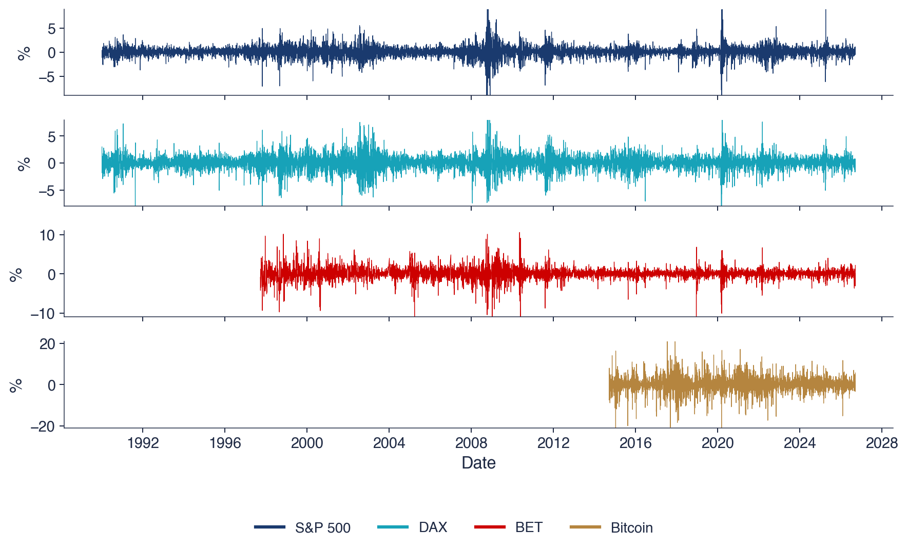
Daily log returns (%) of the S&P 500 and the DAX since 1990, of the BET since 1997 and of Bitcoin since 2014, up to 18 September 2026; quiet years alternate with turbulent months in all four series.
What you will be able to do
Define volatility, annualise it with the actual trading frequency and explain why it is a latent quantity.
Compute historical and EWMA volatility and choose a window or a decay factor.
Compute the Parkinson, Garman–Klass, Rogers–Satchell and Yang–Zhang estimators and state their assumptions.
Detect volatility clustering with the ACF of squared returns, the Ljung–Box test and the ARCH-LM test.
Compare implied and realised volatility, and evaluate volatility forecasts with MSE and QLIKE.
Chapter plan
What Is Volatility?The definition, the units and annualisation, four markets, and why volatility is latent.
EWMA and RiskMetricsThe EWMA recursion, its weights and half-life, the ghost effect of rolling windows and the link to GARCH.
Range-Based EstimatorsParkinson, Garman–Klass, Rogers–Satchell and Yang–Zhang, their efficiency in simulation and their behaviour on real OHLC data.
Realised VolatilityRealised variance from intraday returns, a simulated example and microstructure noise.
Volatility ClusteringThe ACF of absolute and squared returns, a shuffling experiment, the Ljung–Box and ARCH-LM tests, and why clustering creates heavy tails.
Evaluating Volatility ForecastsProxies, the MSE and QLIKE losses, a comparison of six forecasts and the choice of the decay factor.
AI for Scientific DiscoveryAn open question on range-based estimators for thinly traded Bucharest stocks, the help AI can give and the checks it needs.
SummaryKey results, formulas and questions for self-assessment.
What Is Volatility?
The section defines volatility as the standard deviation of returns, fixes its units and the rule for annualising it, and shows on four markets that it changes over time. It then separates the conditional volatility of a given day, which is the object of interest, from the unconditional volatility, its long-run average, and explains why the first is never observed directly.
Mandelbrot (1963) observed, in his study of speculative prices, that large price changes tend to be followed by large changes of either sign, and small changes by small changes. The size of the moves is persistent even when their direction is not. The photograph on the slide shows the Amsterdam Stock Exchange on 21 October 1987, two days after the crash of 19 October; in the weeks that followed, markets stayed turbulent, and days with large moves in both directions came one after the other.
Volatility enters almost every quantity used in finance. Risk measures such as VaR and ES (Chapter 10) scale with it, and the Sharpe ratio of Chapter 1 divides the excess return by it. Option prices depend on the volatility expected until expiry, exchanges set margins in proportion to it, and portfolio managers size positions so that the risk they take stays within a target. An error in the volatility estimate therefore propagates to all of these numbers.
The chapter addresses two separate questions. The first is measurement: how to estimate the volatility of a given period from the prices that are available. The second is dynamics: whether today's volatility says something about tomorrow's, which is the property called volatility clustering. The first question is about estimators; the second is about the time-series structure that the models of Chapter 9 describe.
In brief
“Large changes tend to be followed by large changes, of either sign, and small changes tend to be followed by small changes” Mandelbrot (1963)
after the crash of 19 October 1987, markets stayed turbulent for weeks
The chapter works with daily log returns in percent, \(r_t = 100\,(\ln P_t - \ln P_{t-1})\), as defined in Chapter 1. Volatility is the standard deviation of returns, \(\sigma = \sqrt{\mathrm{Var}(r_t)}\). It has the units of the return, percent per day, while the variance \(\sigma^2\) is measured in squared percent. The distinction matters in practice: the estimators of this chapter work with variances, because variances add up over time, and the results are reported as volatilities, because these are in the units of returns.
To compare assets and horizons, volatility is quoted per year. With \(A\) observations per year and uncorrelated returns, the variance of the sum of \(A\) daily returns is the sum of their variances, so
The number \(A\) is the actual trading frequency of the asset: about 252 days for the S&P 500, 250 for the BET, and 365 for Bitcoin, which trades every day. This is the square-root-of-time rule of Chapter 7, and it holds only for uncorrelated returns; with positive autocorrelation the variance of a sum grows faster than \(A\), with negative autocorrelation more slowly.
Volatility measures dispersion in both directions: a large gain counts as much as a large loss of the same size. This symmetry makes it simple to estimate and to aggregate, but it is not the only way to describe the uncertainty of returns. The information entropy of the return distribution is one alternative (Pele, Lazar & Dufour, 2017), and the tail measures VaR and ES of Chapter 10 look only at the losses.
The chart shows daily log returns in percent for four markets: the S&P 500 and the DAX since 1990, the BET, the main index of the Bucharest Stock Exchange (BVB, Bursa de Valori București), since 1997, and Bitcoin since 2014; the last observation is 18 September 2026. Each panel has its own vertical scale: about ±8% for the two developed-market indices, ±10% for the BET and ±20% for Bitcoin. The scales already show that the four markets differ in their level of risk.
The shape of the four series is nevertheless the same. Quiet years, in which the daily returns stay within a narrow band, alternate with turbulent months, in which large moves in both directions follow one another. For the S&P 500 the turbulent periods are concentrated around 2008 and 2020; the DAX adds a long agitated period in the early 2000s; the BET is very volatile in its first years and again around 2008–2010.
This alternation is volatility clustering, and it appears in a large US index, a European index, an emerging market and a digital asset alike. Its universality is the reason why it counts among the stylised facts of financial returns (Cont, 2001). The rest of the chapter measures the level of volatility at each point in time and then tests formally whether the bursts visible in the chart are a property of the data or an accident of chance.
In brief
Daily log returns in %: S&P 500 and DAX since 1990, BET since 1997, Bitcoin since 2014; last day 18 September 2026
Quiet years alternate with turbulent months in all four series
The table summarises the four series. The annualised volatility is 18.0% for the S&P 500, 21.8% for the DAX, 23.4% for the BET and 66.6% for Bitcoin, which is more than three times as volatile as the stock indices. The largest daily move is a fall in every series: −12.8% for the S&P 500 on 16 March 2020, −13.1% for the DAX on 12 March 2020, −13.1% for the BET on 7 January 2009 and −46.5% for Bitcoin on 12 March 2020. Three of the four records fall in the same week of March 2020.
Measured in units of the daily standard deviation, these moves lie between about 8 and 13 standard deviations from the mean; for the S&P 500, for example, the fall of 12.8% is about 11.3 times the daily standard deviation of 1.13%. Under the Normal distribution, moves of this size are practically impossible (Chapter 2), yet each market has at least one of them.
The last column gives the excess kurtosis, the kurtosis minus 3, which is 0 for the Normal distribution: 10.9 for the S&P 500, 6.0 for the DAX, 9.9 for the BET and 12.0 for Bitcoin. All four values indicate heavy tails. Section 6 shows that volatility clustering is one cause: a mixture of calm and turbulent days produces heavy tails even when the return of each day is Normal.
In brief
Annual volatility
Largest daily move
Date
Excess kurtosis
S&P 500
18.0%
\({-12.8}\%\)
16 March 2020
10.9
DAX
21.8%
\({-13.1}\%\)
12 March 2020
6.0
BET
23.4%
\({-13.1}\%\)
7 January 2009
9.9
Bitcoin
66.6%
\({-46.5}\%\)
12 March 2020
12.0
The largest moves are 8 to 13 standard deviations: practically impossible under the Normal distribution (Chapter 2)
Excess kurtosis far above 0 (the Normal value): heavy tails; Section 6 shows that clustering is one cause
A convenient model writes the return as a constant mean plus a shock whose size changes every day,
\[r_t = \mu + \sigma_t z_t,\]
where \(\mu\) is the mean return and the \(z_t\) are i.i.d. shocks with mean 0 and variance 1. The quantity \(\sigma_t\) is the conditional volatility: \(\sigma_t^2 = \mathrm{Var}(r_t \mid \mathcal{F}_{t-1})\), the variance of the return given the information \(\mathcal{F}_{t-1}\) available at the close of day \(t-1\). The unconditional volatility \(\sigma = \sqrt{\mathrm{Var}(r_t)}\) is its long-run average level; with a constant mean, \(\sigma^2 = E[\sigma_t^2]\).
The conditional volatility is latent: it is never observed, because each day produces a single return. With \(\mu = 0\), the squared return is an unbiased measure of the conditional variance, \(E[r_t^2 \mid \mathcal{F}_{t-1}] = \sigma_t^2\), but a very noisy one. Since \(r_t^2 = \sigma_t^2 z_t^2\), the measurement error is the factor \(z_t^2\), which for Normal shocks has variance 2: the noise is larger than the signal. A quiet day can occur in a turbulent period, and a large move can occur in a calm one.
There are three ways to obtain more information about \(\sigma_t\), and they organise the chapter. The first averages many days, as historical volatility and EWMA do (Sections 2 and 3). The second uses the whole path of the day through the high and low prices (Section 4). The third uses intraday prices to compute realised volatility (Section 5). Each gains precision by relying on an additional assumption, and much of the chapter is about when these assumptions hold.
In brief
Model: the return is a constant mean plus a shock whose size changes every day: \(r_t = \mu + \sigma_t z_t\)
\(\mu\): the mean return; \(z_t\): i.i.d. shocks with mean 0 and variance 1
\(\sigma_t\) is the conditional volatility: \(\sigma_t^2 = \mathrm{Var}(r_t \mid \mathcal{F}_{t-1})\), with \(\mathcal{F}_{t-1}\) the information at the close of day \(t-1\)
the unconditional volatility\(\sigma = \sqrt{\mathrm{Var}(r_t)}\) is its long-run average level
Latent: we never observe \(\sigma_t\), only one return per day
\(r_t^2\) is an unbiased but very noisy measure of \(\sigma_t^2\) (with \(\mu = 0\)): \(E[r_t^2 \mid \mathcal{F}_{t-1}] = \sigma_t^2\)
a quiet day can happen in a turbulent period, and the other way round
Three ways to get more information about \(\sigma_t\)
average many days: historical volatility, EWMA
use the whole path of the day: the high and low prices
For the S&P 500 since 1990 the daily standard deviation is \(\hat\sigma = 1.13\%\) and the index trades on about \(A = 252\) days a year. By (8.1) the annual volatility is \(\hat\sigma_{\text{year}} = 1.13 \times \sqrt{252} = 1.13 \times 15.87 = 18.0\%\), the value of the table above.
Bitcoin trades seven days a week. Since 2014 its daily standard deviation is \(\hat\sigma = 3.49\%\), and the correct annualisation uses \(A = 365\):\(3.49 \times \sqrt{365} = 3.49 \times 19.11 = 66.6\%\). Using the equity convention of 252 days gives \(3.49 \times \sqrt{252} = 55.3\%\), an annual volatility understated by more than 11 percentage points, because it ignores about a third of the days on which Bitcoin actually trades.
The rule for comparisons follows: annualise each series with its own calendar, then compare. Daily standard deviations are not comparable either, since a daily return covers a different amount of trading time on different markets, and an annual figure computed with the wrong \(A\) makes a 24-hour market look less risky than it is.
In brief
S&P 500 since 1990: daily standard deviation \(\hat\sigma = 1.13\%\), \(A = 252\) observations per year
wrong, with the equity convention: \(3.49 \times \sqrt{252} = 55.3\%\)
Comparing assets: annualise each with its own calendar, then compare
Section summary
Volatility is the standard deviation of returns, measured in percent per day and annualised with the square root of the actual number of observations per year. On four markets it ranges from 18.0% a year for the S&P 500 to 66.6% for Bitcoin, the largest daily moves lie 8 to 13 standard deviations from the mean, and quiet years alternate with turbulent months. The conditional volatility of a given day is latent, and a single squared return measures it with a noise larger than the signal. The next section starts with the simplest remedy, averaging over a window of past days.
Historical Volatility and the Choice of the Window
The simplest estimate of current volatility is the standard deviation of the most recent returns. The section defines this historical (rolling) volatility, compares three window lengths on the S&P 500 since 1990, and quantifies the sampling error of a volatility estimated from a short window, first for Normal returns and then for returns with heavy tails.
where \(\bar r_t\) is the mean of the same \(n\) returns, \(j\) counts how many days back a return lies (\(j = 0\) is day \(t\) itself), and \(\hat\sigma_t\) is the estimate available at the close of day \(t\). The window is rolling: each day the newest return enters and the oldest one leaves, so the estimate is always based on the same number of days.
For daily data the mean is often set to zero, which gives \(\hat\sigma_t^2 = \frac{1}{n}\sum_{j=0}^{n-1} r_{t-j}^2\). The reason is that the daily mean is tiny compared with the standard deviation: 0.03% against 1.13% for the S&P 500. Over a 21-day window the sample mean has a standard error of about \(1.13/\sqrt{21} \approx 0.25\%\), much larger than the mean it estimates, so subtracting it adds noise without removing any meaningful bias.
The usual windows are \(n = 21\) trading days (a month), \(n = 63\) (a quarter) and \(n = 252\) (a year). Each \(\hat\sigma_t\) is annualised with \(\sqrt{A}\) and plotted at the last day of its window. Plotting at the end of the window means that the estimate uses only information available on that date, which is what makes it usable as a forecast of the volatility of the next day.
In brief
Historical volatility on a window of the last \(n\) days:
\(\hat\sigma_t = \sqrt{\dfrac{1}{n-1}\sum_{j=0}^{n-1}(r_{t-j} - \bar r_t)^2}\), with \(\bar r_t\) the mean of the same \(n\) returns
\(j\): how many days back the return lies (\(j = 0\) is day \(t\)); \(\hat\sigma_t\): the estimate at the close of day \(t\)
rolling window: each day the newest return enters and the oldest leaves
The chart shows the annualised rolling volatility of the S&P 500 since 1990 for the three windows: 21 days in red, 63 days in dark blue and 252 days in green. The dashed horizontal line is the whole-sample volatility, 18.0%. All three series fluctuate around this line, but with very different amplitudes and timing.
The 21-day series has the sharpest peaks, above 80% at the end of 2008 and close to 100% in the spring of 2020, and it falls back quickly after each crisis. The 63-day series reaches lower peaks and lags behind. The 252-day series is the smoothest: it rose to about 45% only in 2009, after the worst of the financial crisis, and stayed on a high plateau from the spring of 2020 to the spring of 2021, long after the market had calmed down; it then dropped abruptly once the crisis days left the one-year window.
The question for the room asks which window one should trust on the day after a crash. One way to think about it is to ask what each estimate contains on that day: the 21-day window is already dominated by the crash, while the 252-day window still averages the crash with about 250 calm days before it. The next frame gives the answer and the numbers behind it.
In brief
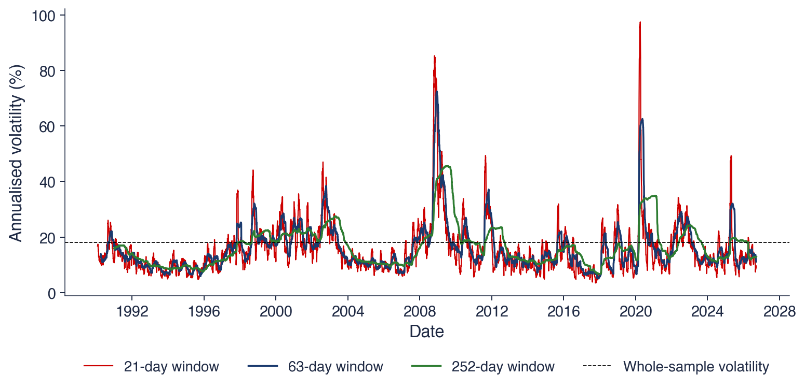
Rolling volatility of the S&P 500, annualised; dashed line: the whole-sample volatility, 18.0%
Question for the room: which window would you trust on the day after a crash?
A short window reacts fast but is noisy. The 21-day volatility of the S&P 500 reached its maximum, 97.5%, on 6 April 2020, within weeks of the crash, and the typical daily change of its logarithm, \(\ln\hat\sigma_t\), is 6.7%: the estimate moves by several percent of its own level every day, even when nothing changes in the market. A long window is smooth but slow: the 252-day volatility reached its maximum of only 45.6% on 15 July 2009, months after the peak of the 2008 crisis, and its logarithm changes by 0.8% a day.
The answer to the question is therefore a short window, or the EWMA of the next section, because a long window still averages the calm days before the crash. The choice depends on the purpose. For daily risk limits and VaR, a fast estimate is needed; for capital planning, a long window is often preferred precisely because it changes slowly. The trade-off is one of bias against variance: when volatility changes, a long window is biased towards the past, and a short window has a large sampling error.
At the end of the sample the three windows give 9.6% (21 days), 11.1% (63 days) and 12.9% (252 days), all well below the whole-sample 18.0%. The ordering says that the last month was calmer than the last quarter, which was calmer than the last year. Three reasonable estimators thus give three answers to the question "how volatile is the S&P 500 today", differing by about a third.
In brief
Short window (\(n = 21\)): reacts fast, but is noisy
maximum 97.5% on 6 April 2020; the typical daily change of \(\ln\hat\sigma_t\) is 6.7%
Long window (\(n = 252\)): smooth, but slow
maximum only 45.6%, reached on 15 July 2009, months after the peak of the 2008 crisis; daily change 0.8%
Answer: a short window, or EWMA (next section), because a long window still averages the calm days before the crash
for capital planning, a long window is preferred: it changes slowly
At the end of the sample: 9.6% (21 days), 11.1% (63 days), 12.9% (252 days)
With \(n\) i.i.d. Normal returns, the sample variance has variance about \(2\sigma^4/n\), and the delta method transfers this to the standard deviation. The relative standard error of \(\hat\sigma\), the standard deviation of the estimate across samples divided by the true \(\sigma\), is then approximately \(\mathrm{SE}(\hat\sigma)/\sigma \approx 1/\sqrt{2n}\). It is 15.4% for \(n = 21\), 8.9% for \(n = 63\) and 4.5% for \(n = 252\): a monthly estimate is uncertain by about one sixth of its value, and halving the error requires four times as many days.
Heavy tails make the estimate less precise. If the returns have kurtosis \(\kappa\), the variance of the sample variance is about \((\kappa - 1)\sigma^4/n\), and the delta method gives \(\mathrm{SE}(\hat\sigma)/\sigma \approx \sqrt{(\kappa - 1)/(4n)}\). For \(\kappa = 3\), the Normal value, the two formulas coincide. For the S&P 500, with kurtosis \(\kappa = 13.9\) (excess kurtosis 10.9), the relative error is 39% for \(n = 21\) and 11% for \(n = 252\), more than twice the Normal values.
The worked example applies this to the last 21-day volatility of the S&P 500, 9.6%. An approximate 95% interval, the estimate plus or minus 1.96 standard errors, is \([6.7\%; 12.5\%]\) under Normal returns and \([2.2\%; 17.0\%]\) with the observed kurtosis. The second interval almost reaches the long-run level of 18.0%. A volatility estimated from one month of daily closes is a rough measurement, and this imprecision is the motivation for the rest of the chapter: weighting the past more cleverly, and using more information from each day.
In brief
With \(n\) i.i.d. Normal returns, the relative standard error of \(\hat\sigma\) is \(\mathrm{SE}(\hat\sigma)/\sigma \approx 1/\sqrt{2n}\)
\(\mathrm{SE}(\hat\sigma)\): the standard deviation of the estimate across samples; divided by \(\sigma\) it is a relative error
for \(\kappa = 3\) (Normal) the two formulas coincide
Worked example: the last 21-day volatility of the S&P 500 is 9.6%
approximate 95% interval, Normal returns: \([6.7\%; 12.5\%]\); with the observed kurtosis: \([2.2\%; 17.0\%]\)
Section summary
A rolling window estimates volatility from the last \(n\) returns, and the choice of \(n\) is a trade-off. On the S&P 500 a 21-day window peaked at 97.5% within weeks of the 2020 crash, while a 252-day window peaked at 45.6% months after the 2008 crisis. The short window is noisy: with the observed kurtosis, its relative standard error is 39%, and the last monthly estimate of 9.6% has a 95% interval from 2.2% to 17.0%. The next section replaces the equal weights of a window with weights that decline smoothly into the past.
EWMA and RiskMetrics
The exponentially weighted moving average (EWMA) gives the most recent returns the largest weight and lets the weight of older returns decay geometrically. The section presents its origin in the RiskMetrics system of J.P. Morgan, the recursion and its weights, a worked update, the ghost effect that it avoids, and its place as a special case of the GARCH model of Chapter 9.
In October 1994 J.P. Morgan launched RiskMetrics and published its methods and data free of charge (J.P. Morgan/Reuters, 1996). The goal was a common yardstick for market risk that every bank could use and compare. The system provided the volatilities and correlations of more than 480 series, updated every day; the photograph shows the J.P. Morgan building at 23 Wall Street in New York.
The method behind the numbers is an exponentially weighted moving average of squared returns. It has a single parameter, the decay factor \(\lambda\), set to 0.94 for daily forecasts and 0.97 for monthly ones. For each series, the value of \(\lambda\) that minimised the root mean squared error of its variance forecasts was computed, and 0.94 is the weighted average of these values over all series.
The choice of one parameter for all series was deliberate. It requires no estimation, it can be applied to hundreds of series every day, and using the same \(\lambda\) for every series keeps the resulting covariance matrix positive semidefinite, so that portfolio variances computed from it are never negative. By turning volatility into a published daily number, RiskMetrics made VaR a routine computation in banks.
In brief
J.P. Morgan launched RiskMetrics in October 1994 and published its methods and data free of charge J.P. Morgan/Reuters (1996)
goal: one common yardstick for market risk across banks
volatilities and correlations of more than 480 series, updated every day
The method: an exponentially weighted moving average (EWMA) of squared returns
one parameter, the decay factor\(\lambda\): \(0.94\) for daily forecasts, \(0.97\) for monthly ones
for each series, \(\lambda\) minimises the root mean squared error of its variance forecasts; 0.94 is the weighted average over all series
Today's variance is a weighted average of yesterday's variance and yesterday's squared return. The decay factor \(\lambda\) is the weight of the past: a value close to 1 gives a smooth estimate that reacts slowly to new returns. Since \(\sigma_t^2\) uses returns up to day \(t-1\) only, it is the forecast of the variance of day \(t\). The recursion starts from \(\sigma_1^2\) equal to the mean of the first squared returns; the weight of this starting value after \(t\) days is \(\lambda^{t-1}\), so its effect fades after a few months.
Substituting the recursion into itself repeatedly gives
The weights \((1-\lambda)\lambda^{j-1}\) decline geometrically with the lag \(j\) and sum to 1, so EWMA is a weighted average of all past squared returns. A convenient summary of the memory is the half-life, the lag at which the weight has fallen to half of its initial value, \(\ln 0.5/\ln\lambda\).
A rolling window, in contrast, gives weight \(1/n\) to each of the last \(n\) days and 0 to all older days. Its weights are flat and then drop abruptly to zero; EWMA weights are largest for the most recent day and never drop abruptly. This difference in the shape of the weights explains the different behaviour of the two estimators after a large shock.
The chart plots the weight of the squared return \(j\) days in the past. The red curve is EWMA with \(\lambda = 0.94\), which starts at \(1 - \lambda = 0.06\) and decays quickly; the blue curve is EWMA with \(\lambda = 0.97\), which starts at 0.03 and decays more slowly; the green step is the equal weight \(1/63\) of a 63-day window, which drops to zero after day 63.
For \(\lambda = 0.94\) the half-life is 11.2 days, the mean lag \(1/(1-\lambda)\) is 16.7 days, and 99% of the weight lies on the last 74 days. For \(\lambda = 0.97\) the half-life is 22.8 days and 99% of the weight lies on the last 151 days. The RiskMetrics daily estimator is thus a short-memory average: half of its weight lies on the last eleven days or so.
Both EWMA curves cross the equal-weight line at a lag of about 22 days. Before that lag, EWMA gives the recent days more weight than the 63-day window does; after it, less. EWMA concentrates on the recent past without ever completely forgetting the more distant past, and its weights change smoothly with the lag instead of falling off a cliff.
In brief
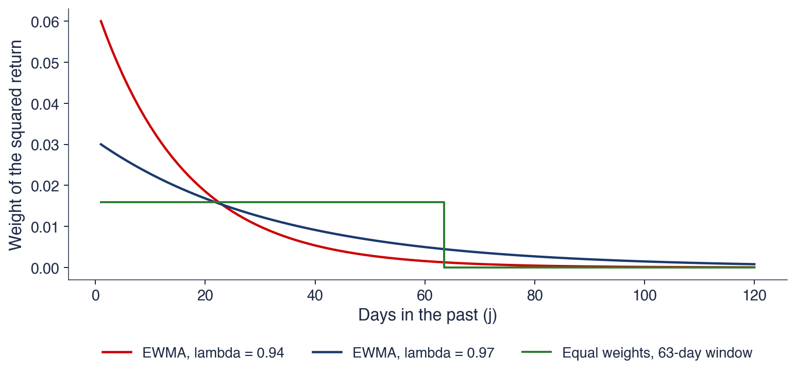
\(\lambda = 0.94\): half-life 11.2 days, mean lag \(1/(1-\lambda) = 16.7\) days, 99% of the weight in the last 74 days
\(\lambda = 0.97\): half-life 22.8 days, 99% of the weight in the last 151 days
Suppose yesterday's EWMA variance is \(\sigma_{t-1}^2 = 1.00\) in squared percent, a daily volatility of 1%, and yesterday's return is \(r_{t-1} = -3\%\), a move of three standard deviations. With \(\lambda = 0.94\), the first term of (8.3) is \(\lambda\sigma_{t-1}^2 = 0.94 \times 1.00 = 0.94\), the second is \((1-\lambda)r_{t-1}^2 = 0.06 \times 9 = 0.54\), and their sum is \(\sigma_t^2 = 1.48\). The daily volatility rises to \(\sigma_t = 1.22\%\), or \(1.22 \times \sqrt{252} = 19.3\%\) a year.
If today is quiet, \(r_t = 0\), the next update keeps only the first term: \(\sigma_{t+1}^2 = 0.94 \times 1.48 = 1.39\). The effect of the shock fades by 6% per day, the weight \(1 - \lambda\) that EWMA gives each day to the new squared return. It never drops out abruptly; it decays geometrically, with a half-life of 11.2 days.
A 63-day window treats the same shock differently. Today it adds \(9/63 = 0.14\) to the variance, about a quarter of the EWMA reaction of 0.54, and then keeps this contribution unchanged for 63 days, after which it removes it all at once. The window thus reacts too little at first and too abruptly at the end; the next frame shows what this abrupt end looks like in real data.
In brief
Yesterday's EWMA variance: \(\sigma_{t-1}^2 = 1.00\) (%\(^2\)), a daily volatility of 1%; yesterday's return: \(r_{t-1} = -3\%\)
The chart covers the S&P 500 from October 2019 to March 2021. The dark blue line is the 63-day rolling volatility, the red line is the EWMA volatility with \(\lambda = 0.94\), both annualised, and the bars are the absolute daily returns \(|r_t|\) on the same annual scale, \(|r_t|\sqrt{252}\). The tallest bar, above 200%, is the fall of 12.8% on 16 March 2020.
The two estimators react very differently to the crash. The red line rises steeply in early March, peaks in the second half of the month and then decays smoothly through April, May and June as the daily moves become smaller. The blue line rises more slowly, stays on a plateau just above 60% through April and May, when the daily moves were already much smaller, and then drops in steps in June.
The question for the room asks why the blue line falls sharply in mid-June 2020, on a calm day. The bars show nothing unusual on that day. The explanation lies not in the return that entered the window, but in the return that left it.
In brief
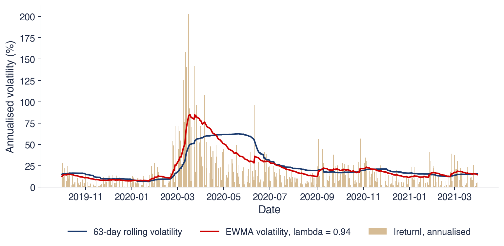
S&P 500: 63-day rolling volatility and EWMA volatility (\(\lambda = 0.94\)), annualised; bars: \(|r_t|\) on the same annual scale
Question for the room: why does the blue line fall sharply in mid-June 2020, on a calm day?
On 15 June 2020 the return of 16 March 2020, −12.8%, left the 63-day window. The rolling volatility fell from 50.4% to 43.0% in one day, with no news at all. This artefact is the ghost effect: an old shock leaves the window abruptly, and the estimate jumps on a day when nothing happens. A single large return thus moves a rolling estimate twice: once when it enters, and once, 63 days later, when it leaves.
EWMA reacts faster and forgets smoothly. Its peak, 84.8%, came on 24 March 2020, while the 63-day volatility peaked at only 62.6% on 20 May 2020, two months after the crash. On the ghost day, EWMA changed by only −0.9 percentage points, the ordinary geometric decay of an old shock.
The speed has a price. EWMA is noisier than a long window, since half of its weight lies on less than two weeks of data. It also has no long-run level to return to: after a crisis it decays towards whatever the recent returns imply, and its forecast for every future horizon equals today's value. The next frame shows that this property follows from the place of EWMA within the GARCH family.
In brief
Answer: on 15 June 2020 the return of 16 March 2020 (\(-12.8\%\)) left the 63-day window
the rolling volatility fell from 50.4% to 43.0% in one day, with no news at all
this artefact is the ghost effect: an old shock leaves the window abruptly
EWMA reacts faster and forgets smoothly
EWMA peak: 84.8% on 24 March 2020; 63-day peak: 62.6% only on 20 May 2020
on the ghost day EWMA changed by only \(-0.9\) percentage points
Price of the speed: EWMA is noisier than a long window and has no long-run level to return to
where \(\omega > 0\) is a constant, \(\alpha\) is the reaction to yesterday's squared return and \(\beta\) is the weight of yesterday's variance. EWMA is the special case \(\omega = 0\),\(\alpha = 1 - \lambda\),\(\beta = \lambda\), so that \(\alpha + \beta = 1\). A GARCH model with \(\alpha + \beta = 1\) is called integrated GARCH (IGARCH).
The difference shows in the forecasts made at day \(t\) for day \(t + h\). Since \(E_t[r_{t+h-1}^2] = E_t[\sigma_{t+h-1}^2]\), where \(E_t\) denotes the expectation given the information of day \(t\), the EWMA recursion gives \(E_t[\sigma_{t+h}^2] = E_t[\sigma_{t+h-1}^2]\), and therefore \(E_t[\sigma_{t+h}^2] = \sigma_{t+1}^2\) for every \(h\): the forecast is flat and today's level persists for ever. For GARCH with \(\alpha + \beta < 1\), the same argument gives \(E_t[\sigma_{t+h}^2] = \bar\sigma^2 + (\alpha + \beta)^{h-1}(\sigma_{t+1}^2 - \bar\sigma^2)\), a forecast pulled geometrically towards the long-run variance \(\bar\sigma^2 = \omega/(1 - \alpha - \beta)\).
Chapter 9 estimates \(\omega\),\(\alpha\) and \(\beta\) by maximum likelihood. Here the decay factor is either fixed at the RiskMetrics value or chosen by a forecast criterion, which Section 8 does with the QLIKE loss.
\(\omega > 0\): a constant; \(\alpha\): the reaction to yesterday's squared return; \(\beta\): the weight of yesterday's variance
EWMA is the special case \(\omega = 0\), \(\alpha = 1 - \lambda\), \(\beta = \lambda\), so \(\alpha + \beta = 1\) (“integrated” GARCH, IGARCH)
Consequences for forecasts made at day \(t\) for day \(t + h\)
EWMA: flat, \(E_t[\sigma_{t+h}^2] = \sigma_{t+1}^2\) for every \(h\) (\(E_t\): expectation given the information of day \(t\)): today's level persists for ever
GARCH with \(\alpha + \beta < 1\): pulled towards the long-run variance \(\omega/(1 - \alpha - \beta)\)
Chapter 9 estimates \(\omega\), \(\alpha\), \(\beta\) by maximum likelihood; here \(\lambda\) is fixed or chosen by a forecast criterion (Section 8)
Section summary
EWMA updates the variance every day as a weighted average of yesterday's variance and yesterday's squared return, (8.3). With the RiskMetrics value \(\lambda = 0.94\), half of the weight lies on the last 11.2 days and 99% on the last 74. During the 2020 crash EWMA peaked at 84.8% on 24 March, two months before the 63-day window, and it avoided the ghost effect that cut the rolling estimate from 50.4% to 43.0% on a calm day in June. As an integrated GARCH, EWMA has flat forecasts and no long-run level. The next section gains precision differently: by using more prices from each day.
Range-Based Estimators
The close-to-close return uses two prices a day, while most data sources also record the open, the high and the low. The section introduces the notation for these prices, derives the Parkinson estimator from the range of a Brownian motion, presents the Garman–Klass, Rogers–Satchell and Yang–Zhang refinements, measures their efficiency and bias by simulation, and compares them on real data for five assets.
OHLC data record, for each day \(t\), the opening price \(O_t\), the highest price \(H_t\), the lowest price \(L_t\) and the closing price \(C_t\). The close-to-close return uses only two prices a day, the closes of day \(t-1\) and day \(t\). The high and the low carry information about the whole path of prices during the day, which the close-to-close return ignores.
All quantities are log differences in percent measured from the open of day \(t\):\(u_t = \ln(H_t/O_t)\) is the move from the open to the high, \(d_t = \ln(L_t/O_t)\) the move to the low and \(c_t = \ln(C_t/O_t)\) the move to the close. By construction \(d_t \le 0 \le u_t\) and \(d_t \le c_t \le u_t\). The overnight return \(o_t = \ln(O_t/C_{t-1})\) covers the period from the previous close to the open, so that the daily return splits into \(r_t = o_t + c_t\). The range of the day is \(u_t - d_t = \ln(H_t/L_t)\).
The chapter's OHLC data cover the S&P 500 since 2008, the DAX since 2006, Bitcoin since 2014 and stocks of the Bucharest Stock Exchange since 2010. The BET file contains closing prices only, so the range-based estimators cannot be computed for the index itself.
In brief
OHLC data: for each day \(t\), the open \(O_t\), the high \(H_t\), the low \(L_t\) and the close \(C_t\)
the close-to-close return uses 2 prices a day; \(H_t\) and \(L_t\) carry information about the whole path of the day
Notation (log differences in %), each from the open of day \(t\):
The chart shows a simulated log price during one trading day: a Brownian motion on 390 one-minute steps, the length of a 6.5-hour session, after an overnight gap of 0.35%. The vertical axis is the log price relative to the previous close, in percent. The green dot marks the open at 0.35%, the orange dot the low, slightly below the previous close, the red dot the high, reached late in the day, and the purple dot the close.
The close keeps only the end point of the path. Here it says that the price ended the day higher than the previous close, and nothing about how it got there. The high and the low summarise the path: the distance between them shows how far the price travelled during the session. Two days with the same close can have very different ranges, and so very different risk.
This is the idea behind range-based estimators. The extremes of a random path depend on its volatility over the whole day, not only on its net change, so the range carries more information about the variance than a single increment does. The chart also shows the limitation: the range starts at the open, so the overnight gap of 0.35% lies outside it.
In brief
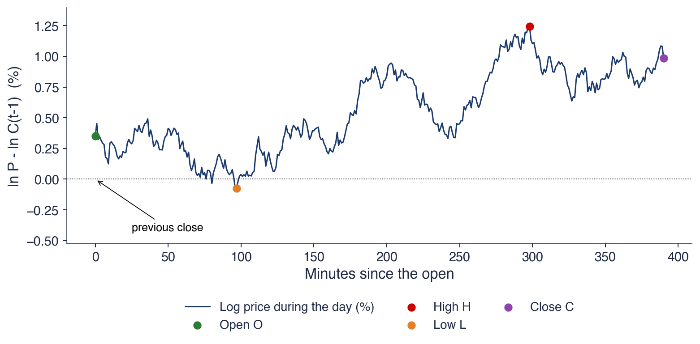
Simulated log price (Brownian motion, 390 one-minute steps) after an overnight gap of \(0.35\%\): the close keeps only the end point; high and low summarise the path
Two days with the same close can have very different ranges, and so very different risk
For a Brownian motion with no drift and variance \(\sigma^2\) per day, the expected squared range is a known multiple of the variance, \(E[(u_t - d_t)^2] = 4\ln 2\;\sigma^2\)(Parkinson, 1980). Dividing the squared log range by this constant gives an unbiased estimator of the daily variance,
and over \(n\) days the estimator is the mean of these values. The constant \(4\ln 2 \approx 2.77\) is larger than 1 because the range of a path is on average larger than its standard deviation over the day.
The derivation rests on assumptions that real markets satisfy only approximately. Trading must be continuous during the day, so that the observed high and low are the true extremes of the price path; with discrete trades the observed range is too small. There must be no drift, since a trend widens the range in its direction. And there must be no overnight jump, because the range only sees the trading session.
When the assumptions hold, the Parkinson estimator is much more precise than the squared return \(r_t^2\); a simulation later in this section measures by how much. The log range has a further use: it is nearly Gaussian, which makes it a convenient input for estimating stochastic volatility models (Alizadeh, Brandt & Diebold, 2002).
In brief
For a Brownian motion with no drift and variance \(\sigma^2\) per day: \(E[(u_t - d_t)^2] = 4\ln 2\;\sigma^2\)Parkinson (1980)
in words: the squared log range, rescaled so that on average it equals the variance
one day: \(\hat\sigma_{P,t}^2 = \dfrac{(u_t - d_t)^2}{4\ln 2}\); on \(n\) days: the mean of these values
\(4\ln 2 \approx 2.77\): the range is on average larger than \(\sigma\)
Assumptions
continuous trading during the day, so the observed high and low are the true extremes
no drift and no overnight jump: the range only sees the trading session
Much more precise than \(r_t^2\): a simulation later in this section measures by how much
The weights 0.5 and \(2\ln 2 - 1 \approx 0.386\) are chosen so that the estimator is unbiased and close to the minimum variance among quadratic forms in \(u_t\),\(d_t\) and \(c_t\), under the assumption of no drift. Subtracting a multiple of \(c_t^2\) removes part of the range that is explained by the net move of the day.
is unbiased for any drift \(\mu\). Each term multiplies the distance from the open to an extreme by the distance from the close to the same extreme, and the drift cancels in these products. The estimator is useful for assets with a strong trend over the estimation window, for example Bitcoin during a strong rally.
Both estimators still ignore the overnight return \(o_t\). They measure the variance of the trading session only, and for a market that closes overnight this is only part of the close-to-close variance that a risk manager needs.
where \(\hat\sigma_O^2\) and \(\hat\sigma_C^2\) are the sample variances of the overnight returns \(o_t\) and of the open-to-close returns \(c_t\), and \(\hat\sigma_{RS}^2\) is the mean Rogers–Satchell term over the window. The first term measures the night; the last two measure the session, as a weighted average of an open-to-close estimate and a range-based one.
The estimator is unbiased in the presence of both drift and opening jumps, and the weight \(k\) is the value that minimises its variance. For a 21-day window, \(k = 0.34/(1.34 + 22/20) = 0.34/2.44 = 0.14\): the session variance comes mostly, 86%, from the efficient Rogers–Satchell term, and only 14% from the open-to-close variance.
Because it uses sample variances, the Yang–Zhang estimator needs a window of at least \(n = 2\) days. The Parkinson, Garman–Klass and Rogers–Satchell estimators also work for a single day. Among the four range-based estimators, Yang–Zhang is the only one that targets the full close-to-close variance, including the night.
\(\hat\sigma_O^2\), \(\hat\sigma_C^2\): sample variances of the overnight returns \(o_t\) and of the open-to-close returns \(c_t\); \(\hat\sigma_{RS}^2\): the mean Rogers–Satchell term
Properties
unbiased with drift and with opening jumps; \(k\) minimises the variance of the estimator
On 16 March 2020 the S&P 500 had its largest fall of the sample. The previous close was 2,711; the index opened at 2,509, reached a high of 2,563 and a low of 2,381, and closed at 2,386. In percent, the overnight return is \(o = -7.76\), the moves from the open are \(u = 2.14\),\(d = -5.22\) and \(c = -5.00\), and the close-to-close return is \(r = o + c = -12.77\).
The one-day variance estimates, in squared percent, differ by an order of magnitude. The squared close-to-close return is \(r^2 = 163.0\). The Parkinson estimate is \((7.37)^2/2.773 = 19.6\), the Garman–Klass estimate 17.5 and the Rogers–Satchell estimate 16.5. The overnight part alone is \(o^2 = 60.2\), and the overnight part plus the Rogers–Satchell term gives 76.7.
Most of the fall happened overnight, before the open: the index had already lost 7.76% when trading began. Estimators that ignore \(o_t\) miss most of the risk of this day. Even the sum of the overnight and session parts, 76.7, is less than half of \(r^2\), because \(r^2 = o^2 + c^2 + 2oc\) contains the cross term \(2oc = 2 \times (-7.76) \times (-5.00) \approx 77.6\): the night and the session moved in the same direction, and no estimator built from separate overnight and session parts sees this term.
In brief
Previous close 2 711; open 2 509, high 2 563, low 2 381, close 2 386
\(o = -7.76\), \(u = 2.14\), \(d = -5.22\), \(c = -5.00\) (in %); close-to-close \(r = o + c = -12.77\)
The simulation generates 1000 windows of 21 days with a known true volatility of 1% per day, 15.9% per year. Within each day the log price follows a Brownian motion on 4680 steps, one every 5 seconds, so that the observed high and low are close to the true extremes. The efficiency of an estimator is the ratio \(\mathrm{Var}(\hat\sigma^2_{CC})/\mathrm{Var}(\hat\sigma^2)\), where CC is the close-to-close estimator: an efficiency of 5 means that the estimator has one fifth of the variance of the close-to-close one.
The chart shows the distribution of the annualised estimates as box plots; the dashed line is the true volatility of 15.9%. In the left panel, with continuous trading and no overnight jump, the close-to-close estimates spread widely around the true value, while the four range-based estimators are concentrated in a much narrower band around the true value.
In the right panel 20% of the daily variance comes overnight. The close-to-close estimator is as dispersed as before but still centred on the truth. The Parkinson, Garman–Klass and Rogers–Satchell boxes are still narrow, but they have moved down, below the true value; only the Yang–Zhang box stays centred on 15.9%. The width of a box measures precision, its position relative to the dashed line measures bias, and the next frame puts numbers on both.
In brief
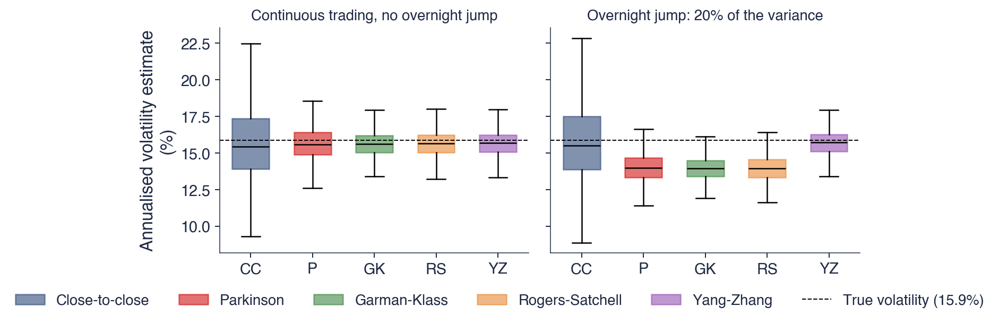
1000 windows of 21 days; true volatility \(1\%\) per day (\(15.9\%\) per year); intraday Brownian motion on 4680 steps (one every 5 seconds)
Efficiency of an estimator: \(\mathrm{Var}(\hat\sigma^2_{CC})/\mathrm{Var}(\hat\sigma^2)\), with CC the close-to-close estimator; right panel: 20% of the daily variance comes overnight
With continuous trading, the efficiencies relative to close-to-close are 5.4 for Parkinson, 9.3 for Garman–Klass, 7.6 for Rogers–Satchell and 8.5 for Yang–Zhang. One month of ranges thus carries as much information as 5 to 9 months of closes. The small biases of −2% to −3% come from the discrete simulation grid: even every 5 seconds, the observed path misses part of the true extremes.
An overnight jump changes the picture. Parkinson, Garman–Klass and Rogers–Satchell underestimate the variance by about 22%: they miss the 20% of the variance that comes overnight, plus the small discretisation bias. Only Yang–Zhang stays unbiased, at −2%, while close-to-close is off by 1%. The MSE (mean squared error) ratio, \(\mathrm{MSE}(CC)/\mathrm{MSE}\), combines bias and variance: it is 1.8 for the three session estimators and 9.0 for Yang–Zhang. The bias eats most of the efficiency gain of the session estimators, though they still beat close-to-close.
Thin trading is the third case. With only 26 prices a day, the observed high is below the true maximum and the observed low above the true minimum, so the range is too small: the biases are −23% for Parkinson, −32% for Garman–Klass and Rogers–Satchell and −28% for Yang–Zhang, against 0 for close-to-close (Molnár, 2012). A precise estimator that is biased can be worse in practice than an imprecise one that is unbiased.
In brief
CC
Parkinson
GK
RS
YZ
Efficiency, continuous trading
1.0
5.4
9.3
7.6
8.5
Bias (%), continuous trading
\({0}\)
\({-2}\)
\({-3}\)
\({-3}\)
\({-2}\)
Bias (%), overnight jump
\({1}\)
\({-22}\)
\({-22}\)
\({-22}\)
\({-2}\)
MSE ratio, overnight jump
1.0
1.8
1.8
1.8
9.0
Bias (%), 26 prices a day
\({0}\)
\({-23}\)
\({-32}\)
\({-32}\)
\({-28}\)
With continuous trading, range estimators are 5 to 9 times more efficient: one month of ranges carries as much information as 5 to 9 months of closes
With an overnight jump, Parkinson, GK and RS miss the night (bias about \(-22\%\)); only YZ stays unbiased; MSE (mean squared error) ratio = \(\mathrm{MSE}(CC)/\mathrm{MSE}\)
With few trades the observed range is too small: all range estimators underestimate (thin markets) Molnár (2012)
The table compares the five estimators on the whole OHLC sample of five assets, as annualised volatilities in percent; P stands for Parkinson. For the S&P 500 since 2008, close-to-close gives 19.9%, Parkinson 15.4%, Garman–Klass 14.6%, Rogers–Satchell 14.4% and Yang–Zhang 16.3%. For the DAX since 2006 the values are 20.9%, 16.7%, 16.6%, 16.6% and 20.3%. For Bitcoin since 2014 they are 66.6%, 63.5%, 62.4%, 62.5% and 63.2%.
The two Bucharest stocks are Banca Transilvania (TLV) and OMV Petrom (SNP), both since 2010. For TLV the estimates are 26.6%, 21.5%, 20.6%, 21.0% and 25.6%; for SNP 24.5%, 21.4%, 20.8%, 21.4% and 25.8%. For stocks, the open, high and low are adjusted for dividends and splits with the same factor as the close, and days without trades are removed.
The last two columns help explain the differences. The night share, \(\hat\sigma_O^2/(\hat\sigma_O^2 + \hat\sigma_C^2)\), is the fraction of the variance that comes overnight: 13% for the S&P 500, 31% for the DAX, 0% for Bitcoin, 26% for TLV and 27% for SNP. The last column is the correlation between the overnight and the open-to-close return, \(\mathrm{corr}(o, c)\): 0.22 for the S&P 500, 0.02 for the DAX and Bitcoin, −0.08 for TLV and −0.20 for SNP. In every row the session estimators lie below close-to-close.
In brief
Since
CC
P
GK
RS
YZ
Night share
\(\mathrm{corr}(o, c)\)
S&P 500
2008
19.9
15.4
14.6
14.4
16.3
13%
\({0.22}\)
DAX
2006
20.9
16.7
16.6
16.6
20.3
31%
\({0.02}\)
Bitcoin
2014
66.6
63.5
62.4
62.5
63.2
0%
\({0.02}\)
TLV
2010
26.6
21.5
20.6
21.0
25.6
26%
\({-0.08}\)
SNP
2010
24.5
21.4
20.8
21.4
25.8
27%
\({-0.20}\)
Annualised volatility (%) on the whole OHLC sample; P = Parkinson; night share \(= \hat\sigma_O^2/(\hat\sigma_O^2 + \hat\sigma_C^2)\)
Stocks: open, high and low adjusted with the same factor as the close; days without trades removed
Bitcoin trades 24 hours a day, so its night share is practically zero and all five estimators agree within a few points, from 62.4% to 66.6%. The remaining gap comes from the fact that the daily path is observed through discrete trades rather than continuously, which makes the observed range slightly too small, as in the simulation.
For the DAX and the two Bucharest stocks, between a quarter and a third of the variance comes overnight. The Parkinson, Garman–Klass and Rogers–Satchell estimates are far below close-to-close, by about the night share, while Yang–Zhang, which adds the night, comes close to close-to-close: 20.3% against 20.9% for the DAX, and 25.8% against 24.5% for SNP. This is the overnight-jump case of the simulation, observed in real data.
The S&P 500 does not fit this pattern: even Yang–Zhang, 16.3%, stays well below close-to-close, 19.9%. The overnight and open-to-close returns are positively correlated, 0.22. A likely reason is the way the index open is computed: it uses the last prices of all constituent stocks, including stale prices of stocks that have not yet traded that morning, so part of the overnight news only enters the index after the open. Since \(\mathrm{Var}(r) = \mathrm{Var}(o) + \mathrm{Var}(c) + 2\,\mathrm{Cov}(o, c)\), a positive covariance adds to the close-to-close variance, and no range estimator sees this term, as in the worked example of 16 March 2020. The lesson is to check the assumptions on the data before trusting an efficiency gain.
In brief
Bitcoin trades 24 hours a day: the night share is almost 0, and all five estimators agree within a few points
the remaining gap: the daily path is observed in discrete trades, not continuously
DAX and the BVB stocks: a quarter to a third of the variance comes overnight
Parkinson, GK and RS are far below CC; YZ, which adds the night, is close to CC
S&P 500: even YZ (16.3%) stays below CC (19.9%)
overnight and open-to-close returns are positively correlated (0.22); a likely reason: the index open uses stale prices of stocks that have not traded yet
\(\mathrm{Var}(r) = \mathrm{Var}(o) + \mathrm{Var}(c) + 2\,\mathrm{Cov}(o, c)\): no range estimator sees the covariance term
Lesson: check the assumptions on the data before trusting an efficiency gain
The chart shows the annualised 21-day volatility of the S&P 500 since 2019 from the five estimators: close-to-close as the thick dark blue line, and Parkinson, Garman–Klass, Rogers–Satchell and Yang–Zhang as thinner lines. The two peaks are the crash of March 2020, when close-to-close reached almost 100% while Yang–Zhang and especially the three session estimators peaked much lower, and the market turbulence of April 2025.
Over the whole period the means are 16.3% for close-to-close, 12.5% for Parkinson and 14.7% for Yang–Zhang. The range-based lines are also smoother: the typical daily change of the log estimate is 4.3% for Parkinson and 4.2% for Yang–Zhang, against 7.1% for close-to-close. The efficiency gain of the simulation thus appears in real data as a less noisy estimate.
The two features have to be read together. Range-based estimates are less noisy, but they are systematically lower than close-to-close, and the gap is largest exactly in crises, when overnight gaps are large and correlated with the following session. For risk management a smooth estimate is useful only if its level is right; Yang–Zhang recovers part of the gap by adding the night, but on the S&P 500 not all of it.
In brief
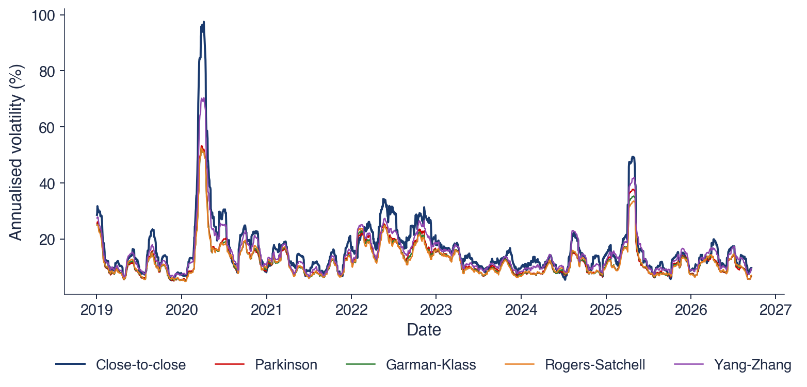
Annualised 21-day volatility by the five estimators; means since 2019: CC 16.3%, Parkinson 12.5%, YZ 14.7%
The range-based lines are smoother: the typical daily change of the log estimate is 4.3% for Parkinson and 4.2% for YZ, against 7.1% for CC
Range-based estimators use the open, high, low and close of each day. In simulation they are 5 to 9 times more efficient than close-to-close, but Parkinson, Garman–Klass and Rogers–Satchell miss the overnight variance, a bias of about −22% when 20% of the variance comes overnight, and all of them underestimate when trades are few. Yang–Zhang adds the night and stays unbiased. On real data the estimators agree for Bitcoin, which trades around the clock, while for the S&P 500 a positive correlation between the night and the session keeps even Yang–Zhang below close-to-close. The next section goes one step further and uses prices from within the day.
Realised Volatility
With intraday prices, the variance of a day can be measured from many small returns instead of one daily return or one range. The section defines realised variance and its limit, the integrated variance, shows in a simulation how closely it tracks the true volatility, and explains why sampling too often makes it worse because of microstructure noise.
Split day \(t\) into \(M\) intervals, for example \(M = 78\) five-minute intervals in a 6.5-hour session, and let \(r_{t,i}\) be the log return of interval \(i\),\(i = 1, \dots, M\). The realised variance of the day is the sum of the squared intraday returns,
\[\mathrm{RV}_t = \sum_{i=1}^{M} r_{t,i}^2,\]
(8.10)
and the realised volatility is \(\sqrt{\mathrm{RV}_t}\). Each squared intraday return has an expectation equal to the variance of its interval, so their sum estimates the variance of the whole day from \(M\) observations instead of one.
Andersen, Bollerslev, Diebold & Labys (2003) and Barndorff-Nielsen & Shephard (2002) show that, as \(M \to \infty\),\(\mathrm{RV}_t\) converges to the integrated variance of day \(t\), the integral of the instantaneous variance over the day, which is the true variance of that day. With enough intraday data, volatility becomes almost observable: each day has a nearly error-free measure of its own variance.
This changes how volatility can be studied. Realised variance is used to evaluate forecasts (Section 8) and to forecast volatility directly, for example with the HAR model of Corsi (2009), which regresses realised volatility on its own averages over the previous day, week and month. Pele & Mazurencu-Marinescu-Pele (2019) use high-frequency Bitcoin prices to study daily risk. The course data are daily, so the next two frames use simulated one-minute prices to show how realised variance behaves.
In brief
Split day \(t\) into \(M\) intervals (for example \(M = 78\) five-minute returns \(r_{t,i}\) in a 6.5-hour session)
\(r_{t,i}\): the log return of interval \(i\) of day \(t\), \(i = 1, \dots, M\)
The simulation generates 60 days, each with 390 one-minute returns. The daily volatility changes from day to day: its logarithm follows an AR(1) process with persistence 0.9. In the chart, the black line is the true daily volatility, the red line the square root of the five-minute realised variance, the green dashed line the square root of the Parkinson estimate and the blue dots the absolute daily return \(|r_t|\). The volatility stays close to 1% for most of the sample and then rises in a burst to several times this level.
The three measures differ greatly in accuracy. The mean absolute relative error is 6% for five-minute RV, 23% for Parkinson and 58% for \(|r_t|\); the correlations with the true volatility are 0.995, 0.94 and 0.59. The red line is almost indistinguishable from the black one, the green line follows it with visible errors, and the blue dots scatter widely around it.
The ranking follows the amount of information each measure uses. Five-minute RV averages 78 squared returns per day, Parkinson uses the two extremes of the path, and \(|r_t|\) uses a single number. A single daily return can be close to zero on a turbulent day and large on a calm one, which is why \(|r_t|\) is the weakest of the three.
In brief
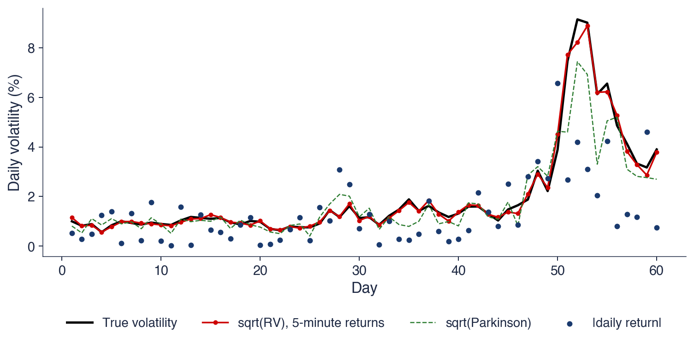
60 simulated days of 390 one-minute returns; the daily volatility follows a log AR(1) process (persistence \(0.9\))
Mean absolute relative error: 5-minute RV 6%, Parkinson 23%, \(|r_t|\) 58%; correlation with the truth: 0.995, 0.94 and 0.59
Observed prices are not exactly the efficient prices. They contain microstructure noise: the bounce between bid and ask prices, the rounding to the price tick, and other effects of the trading mechanism. In the simulation the observed log price equals the true one plus an independent noise with standard deviation 0.025%. Each observed return then contains the difference of two noise terms, and each squared return increases on average by twice the noise variance. The bias of RV is therefore proportional to the number of returns \(M\): the more often one samples, the larger it becomes.
The signature plot shows the mean of RV divided by the true variance against the sampling interval, on a log scale. Without noise (dark blue) the ratio is close to 1 at every interval. With noise (red), one-minute RV overstates the variance by a factor of 1.79, five-minute RV by 1.15, and the bias almost disappears at intervals of 30 minutes or more. At the longest intervals few returns remain in each day, and the estimate becomes noisy again.
The choice of the sampling interval is thus a trade-off: frequent sampling reduces the sampling error but increases the noise bias. In empirical work the signature plot of the data is used to choose an interval where the curve flattens. Liu, Patton & Sheppard (2015) compare a wide range of realised measures across many assets and find that five-minute RV is hard to beat.
In brief
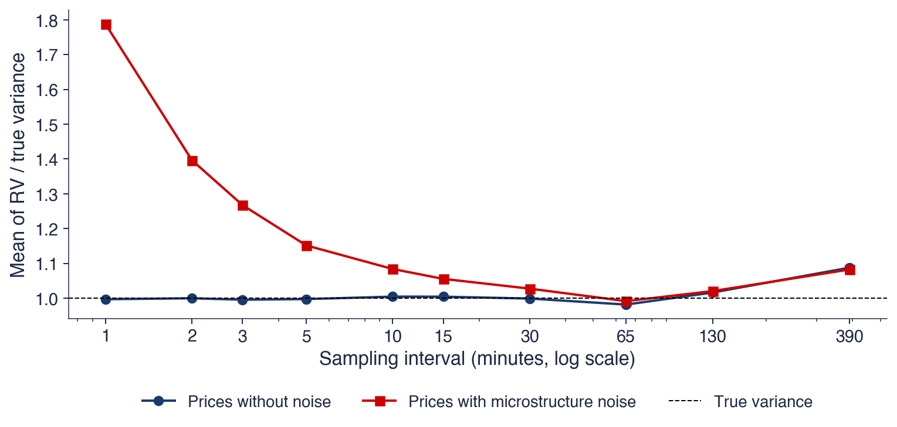
Observed prices = true prices + microstructure noise (bid–ask bounce, price ticks), here with sd \(0.025\%\); each squared return then adds \(2\times\) the noise variance
With noise, one-minute RV overstates the variance by a factor of 1.79; at 5 minutes: 1.15; the signature plot shows RV against the sampling interval
Realised variance sums squared intraday returns, (8.10), and converges to the integrated variance of the day as the sampling becomes finer. In a simulation, five-minute RV tracks the true volatility with a mean absolute relative error of 6%, against 23% for Parkinson and 58% for the absolute daily return. Microstructure noise limits the gain: with a noise of 0.025%, one-minute RV overstates the variance by 79% and five-minute RV by 15%. The next section turns from measuring volatility to its dynamics.
Volatility Clustering
Volatility clustering is the tendency of large moves to follow large moves and small moves to follow small ones. The section introduces it with Engle's ARCH model, shows it in the autocorrelations of absolute and squared returns for three markets, demonstrates with a shuffling experiment that it is a property of the order of returns, presents two formal tests, the Ljung–Box test on squared returns and the ARCH-LM test, applies them to six series, and shows that clustering is one source of heavy tails.
Volatility clustering means that periods of large absolute returns alternate with periods of small ones (Mandelbrot, 1963; Cont, 2001). Returns themselves are almost uncorrelated (Chapter 7), but their absolute values \(|r_t|\) and their squares \(r_t^2\) are strongly autocorrelated. The two facts are not in conflict: returns can be uncorrelated without being independent, because the dependence lies in their second moments, not in their means.
Engle (1982) proposed the first model of this dependence. In his ARCH model (autoregressive conditional heteroskedasticity), the variance of today depends on yesterday's squared shocks, so that \(\sigma_t\) changes over time in a predictable way. Engle received the Nobel Prize in Economic Sciences in 2003, shared with Clive Granger (Nobel Prize, 2003); his Nobel lecture, Engle (2004), reviews how the model was received and extended. The photograph shows him in 2017.
This section tests whether clustering is present in the data; it does not yet model it. The tests ask a simple question, whether the squared returns of the past predict the squared returns of today, and Chapter 9 builds the ARCH and GARCH models that describe how they do so.
In brief
Volatility clustering: periods of large absolute returns alternate with periods of small ones Mandelbrot (1963), Cont (2001)
returns are almost uncorrelated (Chapter 7), but \(|r_t|\) and \(r_t^2\) are strongly autocorrelated
Robert F. Engle Engle (1982): the variance of today depends on yesterday's squared shocks: ARCH
the first model in which \(\sigma_t\) changes over time in a predictable way
Nobel Prize in Economic Sciences 2003, shared with Clive Granger Nobel Prize (2003); Engle's Nobel lecture: Engle (2004)
This section: tests for clustering; Chapter 9: the models
The chart shows the sample autocorrelation function (ACF, Chapter 7) of the returns \(r_t\), the squared returns \(r_t^2\) and the absolute returns \(|r_t|\), for lags from 1 to 100 days, in three panels: the S&P 500, the BET and Bitcoin. The shaded band is \(\pm 1.96/\sqrt{T}\), with \(T\) the number of returns: the region in which about 95% of the sample autocorrelations of i.i.d. data would fall.
The autocorrelations of the returns, the thin dark blue line, stay mostly inside the band, apart from the first lag. The autocorrelations of the absolute and squared returns, the red and green lines, lie far above it. For the S&P 500, all 100 autocorrelations of \(r_t^2\) and all 100 of \(|r_t|\) are above the band, and at lag 100 the autocorrelation of \(|r_t|\) is still 0.09.
The chart condenses the message of the section. The sign of tomorrow's return cannot be predicted from the past, but its size can, and this predictability lasts for months. A large move today raises the probability of a large move tomorrow and in the following weeks, without saying in which direction it will go.
In brief
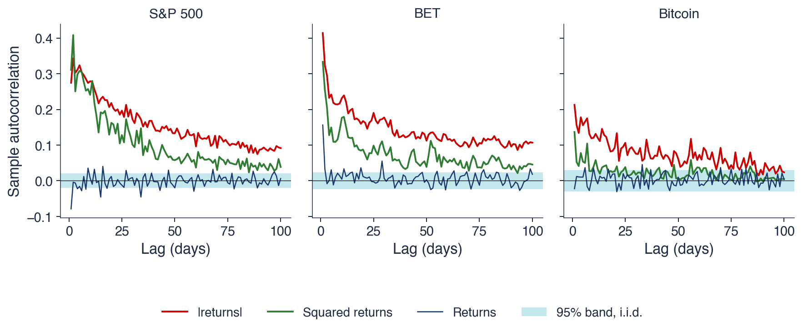
Sample ACF (autocorrelation function, Chapter 7) of \(r_t\), \(r_t^2\) and \(|r_t|\), lags 1–100, with the 95% band \(\pm 1.96/\sqrt{T}\) for i.i.d. data
S&P 500: all 100 autocorrelations of \(r_t^2\) and of \(|r_t|\) lie above the band; at lag 100, \(|r_t|\) still has \(0.09\)
The table gives the main autocorrelations. For the absolute returns, the first-lag autocorrelation \(\hat\rho_1(|r|)\) is 0.27 for the S&P 500, 0.41 for the BET and 0.21 for Bitcoin; at lag 10 the values are 0.28, 0.23 and 0.12, and at lag 100 they are 0.09, 0.11 and 0.02. For the squared returns, \(\hat\rho_1(r^2)\) is 0.31, 0.33 and 0.14, and \(\hat\rho_{10}(r^2)\) is 0.24, 0.18 and 0.04. The number of lags out of 100 at which the autocorrelation of \(|r_t|\) lies outside the band is 100 for the S&P 500 and the BET and 92 for Bitcoin.
The decay is slow. For a process whose autocorrelation fell geometrically from 0.27 at lag 1, the autocorrelation at lag 10 would be \(0.27^{10}\), practically zero; for the S&P 500 it is still 0.28. A shock to volatility remains visible after months, a property that Chapter 11 studies as long memory.
Two further regularities appear. The Taylor effect (Ding, Granger & Engle, 1993) is the finding that \(|r_t|\) is more autocorrelated than \(r_t^2\): this holds at 96% of the lags for the S&P 500 and at all lags for the BET and Bitcoin. Bitcoin also shows weaker clustering in the squares, with only 26 of 100 lags outside the band for \(r_t^2\): squaring gives a few huge days a dominant weight in the sample autocorrelation, and the absolute values, which weigh them less, reveal the dependence more clearly.
In brief
\(\hat\rho_1(|r|)\)
\(\hat\rho_{10}(|r|)\)
\(\hat\rho_{100}(|r|)\)
\(\hat\rho_1(r^2)\)
\(\hat\rho_{10}(r^2)\)
Lags outside, \(|r|\)
S&P 500
\(0.27\)
\(0.28\)
\(0.09\)
\(0.31\)
\(0.24\)
100/100
BET
\(0.41\)
\(0.23\)
\(0.11\)
\(0.33\)
\(0.18\)
100/100
Bitcoin
\(0.21\)
\(0.12\)
\(0.02\)
\(0.14\)
\(0.04\)
92/100
Slow decay: a shock to volatility is still visible after months; Chapter 11 calls this long memory
Taylor effect: \(|r_t|\) is more autocorrelated than \(r_t^2\) (96% of lags for the S&P 500, all lags for the BET and Bitcoin) Ding, Granger & Engle (1993)
Bitcoin: weaker clustering in \(r_t^2\) (26 of 100 lags outside the band): a few huge days dominate the squares
A simple experiment shows where clustering comes from. The chart takes the same S&P 500 returns and puts them in a random order. The shuffled series has exactly the same distribution as the original, and hence the same excess kurtosis of 10.9, but the bursts of volatility around 2008 and 2020 have disappeared: the extreme days are now scattered uniformly over the sample. The right panels show the ACF of \(|r_t|\) for the two orders.
The statistics confirm what the chart shows. The first-lag autocorrelation of \(|r_t|\) is 0.27 in the actual order and −0.02 after shuffling. The Ljung–Box statistic \(Q(10)\) of the squared returns, introduced on the next frame, is 8,015 in the actual order and 6.3 after shuffling, below the 5% critical value of 18.31.
Clustering is therefore a property of the order of the returns, not of their distribution. Shuffling destroys every form of time dependence while keeping the marginal distribution intact, so the shuffled series shows what any statistic would look like under independence. This is also the logic of a permutation test: comparing the observed statistic with its values over many shuffles gives a test of independence without distributional assumptions.
In brief
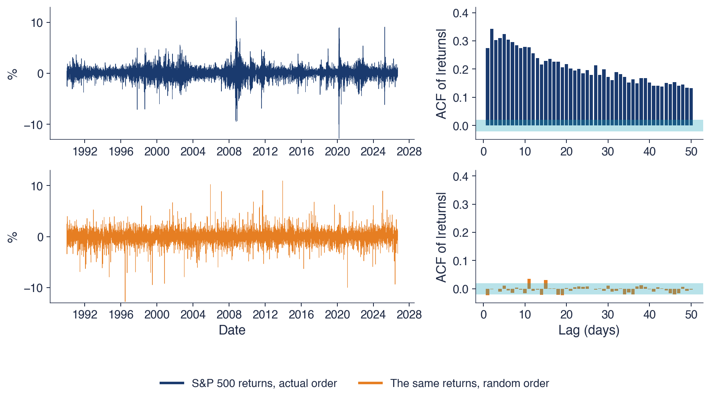
The same S&P 500 returns in a random order: same distribution and same kurtosis (excess 10.9), but no clustering
\(\hat\rho_1(|r|)\): \(0.27\) in the actual order, \(-0.02\) after shuffling; Ljung–Box \(Q(10)\) of \(r_t^2\): 8 015 against 6.3
Clustering is a property of the order of the returns, not of their distribution
The null hypothesis of no clustering is that the conditional variance \(\mathrm{Var}(r_t \mid \mathcal{F}_{t-1})\) is constant, so that the squared returns are uncorrelated. The McLeod–Li test (McLeod & Li, 1983) applies the Ljung–Box statistic (Ljung & Box, 1978) to \(r_t^2\):
\[Q(m) = T(T+2)\sum_{k=1}^m \frac{\hat\rho_k(r^2)^2}{T-k} \sim \chi^2(m) \text{ under } H_0,\]
(8.11)
where \(T\) is the number of returns, \(m\) the number of lags tested and \(\hat\rho_k(r^2)\) the sample autocorrelation of \(r_t^2\) at lag \(k\). The statistic is a weighted sum of the first \(m\) squared autocorrelations, so \(Q(m) \ge 0\), and large values mean autocorrelated squares. The test rejects at the 5% level when \(Q(m)\) exceeds the 95% quantile \(\chi^2_{0.95}(m)\).
For the S&P 500, with \(T = 9{,}240\) and \(m = 3\), the first three autocorrelations of \(r_t^2\) are 0.311, 0.408 and 0.250. Each term \(T(T+2)\hat\rho_k^2/(T-k)\) is approximately \(T\hat\rho_k^2\); the three terms are 892, 1,540 and 579, and their sum is \(Q(3) = 3{,}012\), far above \(\chi^2_{0.95}(3) = 7.81\). The null hypothesis is rejected. In a sample of this size a single autocorrelation of 0.3 is already overwhelming evidence.
The same statistic applied to the returns \(r_t\), as in Chapter 7, asks a different question: whether the mean of tomorrow's return is predictable. Applied to \(r_t^2\), it asks whether the variance is predictable. The two tests can give opposite answers on the same data, and for financial returns they usually do.
In brief
\(H_0\): no clustering, \(\mathrm{Var}(r_t \mid \mathcal{F}_{t-1})\) constant, so \(r_t^2\) is uncorrelated
The second test, proposed by Engle (1982), regresses the squared demeaned returns \(e_t^2\), with \(e_t = r_t - \bar r\) and \(\bar r\) the sample mean, on \(q\) of their own lags:
with regression coefficients \(c_0, \dots, c_q\) and error term \(u_t\). The null hypothesis of no ARCH effects is \(c_1 = \dots = c_q = 0\). The Lagrange multiplier (LM) statistic is
\[\mathrm{LM} = n R^2 \sim \chi^2(q) \text{ under } H_0,\]
(8.12)
where \(n\) is the number of observations in the regression and \(R^2\) its coefficient of determination. As a Lagrange multiplier test, it needs only the regression under the alternative to be estimated by least squares, not the ARCH model itself.
For the S&P 500 with \(q = 5\), the regression has \(n = 9{,}235\) observations, five fewer than the returns because of the lags, and \(R^2 = 0.241\). The statistic is \(\mathrm{LM} = 9{,}235 \times 0.241 = 2{,}227\), far above \(\chi^2_{0.95}(5) = 11.07\): there are strong ARCH effects. The \(R^2\), which lies between 0 and 1, is the share of the variance of \(e_t^2\) explained by its own past; here about a quarter of the day-to-day variation of the squared returns can be predicted from the last five days.
Both tests are diagnostics. They say that clustering exists, not how to model it. The choice of the model, its estimation and the check that it has removed the clustering from the standardised residuals are the subject of Chapter 9.
In brief
Auxiliary regression of the squared demeaned returns \(e_t^2\), \(e_t = r_t - \bar r\), on \(q\) of their own lags Engle (1982):
The table applies the tests to six series: the S&P 500 (\(T = 9{,}240\) daily returns), the DAX (9,288), the BET (7,243), Bitcoin (4,384), and the Bucharest stocks TLV (3,788) and SNP (3,815). The 5% critical values are \(\chi^2_{0.95}(10) = 18.31\) for \(Q(10)\) and \(\chi^2_{0.95}(5) = 11.07\) for ARCH-LM(5). Every statistic computed on \(r^2\) and on \(|r|\) rejects the null hypothesis with a p-value below 0.001.
The statistics on squares and absolute values are large everywhere. \(Q(10)\) of \(r^2\) ranges from 213 for Bitcoin to 8,015 for the S&P 500, and \(Q(10)\) of \(|r|\), which is larger in every series as the Taylor effect predicts, from 944 for SNP to 8,323 for the S&P 500. By comparison, \(Q(10)\) on the returns themselves is small: 90.8 for the S&P 500, 21.8 for the DAX, 198.3 for the BET, 20.2 for Bitcoin, 29.1 for TLV and 20.7 for SNP. These values exceed 18.31, but they are one to two orders of magnitude below the statistics on squares, and the standard Ljung–Box test on returns is itself oversized when the variance clusters. The largest value, for the BET, goes with a first-order autocorrelation of 0.156, a known effect of the non-synchronous trading of the index constituents. Mean predictability is weak; size predictability is strong everywhere.
The ARCH-LM(5) statistics are 2,227 for the S&P 500, 1,209 for the DAX, 1,057 for the BET, 115 for Bitcoin, 253 for TLV and 234 for SNP. Bitcoin and the two Bucharest stocks have the smallest values despite the heaviest tails, with excess kurtosis 12.0, 13.5 and 8.9. Part of the difference comes from the shorter samples, since LM is proportional to \(n\), but the \(R^2\) is also much smaller: a few extreme days dominate the regression of squared returns and reduce the share of the variance that it explains.
In brief
\(T\)
\(\hat\rho_1(r)\)
\(Q(10)\), \(r\)
\(\hat\rho_1(r^2)\)
\(Q(10)\), \(r^2\)
\(Q(10)\), \(|r|\)
ARCH-LM(5)
Exc. kurt.
S&P 500
9 240
\({-0.079}\)
\(90.8\)
\(0.311\)
8 015
8 323
2 227
\(10.9\)
DAX
9 288
\({-0.009}\)
\(21.8\)
\(0.155\)
3 747
5 794
1 209
\(6.0\)
BET
7 243
\({0.156}\)
\(198.3\)
\(0.333\)
2 500
5 184
1 057
\(9.9\)
Bitcoin
4 384
\({-0.022}\)
\(20.2\)
\(0.137\)
213
1 086
115
\(12.0\)
TLV
3 788
\({0.010}\)
\(29.1\)
\(0.122\)
481
1 179
253
\(13.5\)
SNP
3 815
\({-0.015}\)
\(20.7\)
\(0.195\)
505
944
234
\(8.9\)
5% critical values: \(\chi^2_{0.95}(10) = 18.31\) for \(Q(10)\), \(\chi^2_{0.95}(5) = 11.07\) for ARCH-LM(5); every statistic on \(r^2\) and \(|r|\) rejects with p \(<\) 0.001
\(Q(10)\) on \(r\) is far smaller: mean predictability is weak (Chapter 7), size predictability is strong everywhere
Bitcoin and the two BVB stocks have the smallest ARCH-LM values despite heavy tails: a few extreme days dilute the regression
The left panel shows why clustering produces heavy tails even when every day is Normal. Suppose calm days have standard deviation 1, turbulent days standard deviation 2, and a share \(p = 0.2\) of days are turbulent. Given \(\sigma\), the return is Normal, so \(E[r^4 \mid \sigma] = 3\sigma^4\), and the kurtosis of the mixture is \(3E[\sigma^4]/E[\sigma^2]^2\). Here \(E[\sigma^2] = 0.8 \times 1 + 0.2 \times 4 = 1.6\) and \(E[\sigma^4] = 0.8 \times 1 + 0.2 \times 16 = 4.0\), so the kurtosis is \(3 \times 4.0/1.6^2 = 4.69\), above the Normal value of 3. By Jensen's inequality \(E[\sigma^4] \ge E[\sigma^2]^2\), with equality only when \(\sigma\) is constant: any variation in volatility raises the kurtosis. The curves show the kurtosis as a function of \(p\) for turbulent days 2, 3 and 4 times as volatile as calm ones; the effect is strongest when turbulent days are rare and very different from calm ones.
The right panel shows the same mechanism in the GARCH(1,1) model of (8.5) with Normal shocks. Its kurtosis is
and it is finite only when the denominator is positive. For \(\alpha = 0.10\) and \(\beta = 0.85\) the kurtosis is 3.77. The curves show that it explodes as the reaction \(\alpha\) grows, the sooner the larger \(\beta\): for \(\beta = 0.9\) it becomes infinite at \(\alpha\) near 0.09.
Clustering thus explains part of the excess kurtosis found in Section 1. It does not necessarily explain all of it: the GARCH kurtosis of 3.77 for typical parameters is far below the kurtosis of 13.9 of the S&P 500, which is one reason why Chapter 9 also considers shocks with heavy-tailed distributions.
In brief
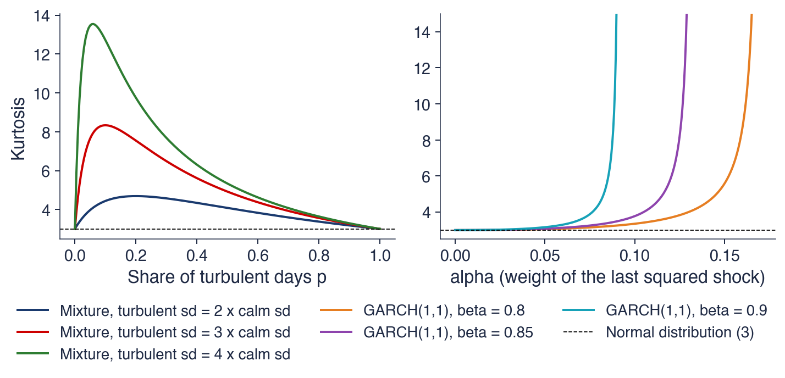
Left: calm days with sd 1, turbulent days with sd 2 (share \(p = 0.2\)): \(E[\sigma^2] = 1.6\), \(E[\sigma^4] = 4.0\), kurtosis \(3E[\sigma^4]/E[\sigma^2]^2 = 4.69\), though each day is Normal
Returns are almost uncorrelated, but their absolute values and squares are autocorrelated for months: for the S&P 500 all 100 autocorrelations of \(|r_t|\) lie above the 95% band, and the autocorrelation at lag 100 is still 0.09. Shuffling the days removes this dependence and keeps the distribution, so clustering is a property of the order of returns. The Ljung–Box test on squared returns, (8.11), and the ARCH-LM test, (8.12), reject the absence of clustering in all six series with p-values below 0.001, and a mixture of calm and turbulent days produces heavy tails even with Normal days. The next section looks at volatility over longer horizons, at its market-implied counterpart and at its asymmetric response to falls.
Long-Run Behaviour, the VIX and the Leverage Effect
The section looks at three further regularities of volatility. Over three decades, volatility changes a lot but always returns to a normal level. Implied volatility, measured by the VIX, is usually higher than the volatility that follows, a gap that reflects a risk premium. And volatility reacts more to falls than to rises of the same size, the leverage effect, which the section measures with correlations, conditional means and a nonparametric regression.
The left panel shows the volatility of each calendar year, annualised, for the four markets. For the S&P 500 it ranges from 7% in 2017 to 41% in 2008; for the BET from 10% in 2017 to 43% in 2008; for Bitcoin from 42% in 2025 to 94% in 2017. The DAX follows the S&P 500 closely, with a higher peak in the early 2000s. Volatility is clearly not constant from year to year, and the high years are shared across markets: 2008 stands out in all three stock indices, and 2020 in the S&P 500 and the DAX.
The right panel looks at persistence month by month. Each point is a month of the S&P 500: on the horizontal axis the logarithm of the realised volatility of the previous month, computed from daily returns, on the vertical axis that of the current month. The dashed line is the 45-degree line, and the red line is the fitted AR(1) relation with slope \(\hat\phi = 0.67\).
The red line is flatter than the 45-degree line. A month of high volatility tends to be followed by a month closer to the average, and so does a month of low volatility. If volatility were a random walk, the points would scatter around the 45-degree line, and a crisis level would persist indefinitely on average. The slope below 1 is the signature of mean reversion, which the next frame quantifies.
In brief
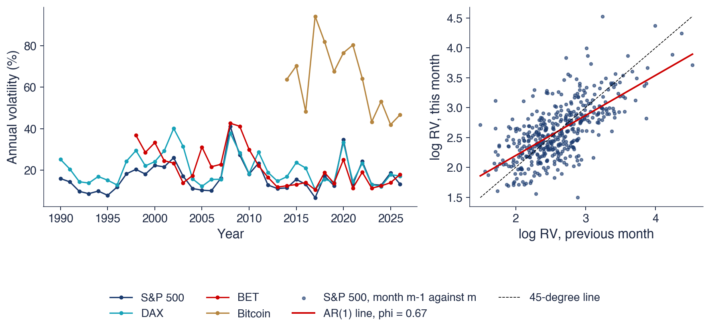
Left: volatility of each calendar year (annualised, %); right: log monthly realised volatility of the S&P 500 (from daily returns) against the previous month
S&P 500: from 7% (2017) to 41% (2008); BET: 10% (2017) to 43% (2008); Bitcoin: 42% (2025) to 94% (2017)
Volatility changes over time, but it does not drift away: it returns to a normal level, as Schwert (1989) documented for US stock returns. The AR(1) regression of the log monthly realised volatility of the S&P 500 on its previous value, over 441 months, gives \(\hat\phi = 0.67\) with a standard error of 0.04. The coefficient \(\hat\phi\) is the estimated weight of last month's log volatility; a value close to 1 would mean slow mean reversion, and 0.67 is many standard errors below 1.
Two numbers follow from the regression. The half-life of a volatility shock, the time after which half of a deviation from the long-run level has disappeared, is \(\ln 0.5/\ln\hat\phi = 1.7\) months. The long-run level implied by the regression is about 13.5% a year. A crisis month is thus followed by a gradual return to normal over a few months, not by a permanent shift.
The distribution of monthly volatility is strongly right-skewed, with a skewness of 3.3, while its logarithm is much more symmetric, with skewness 0.6 (Andersen, Bollerslev, Diebold & Ebens, 2001). A few crisis months pull the mean, 15.3%, above the median, 12.9%. This is why volatility models are often written for \(\ln\sigma_t\), which also keeps the volatility positive automatically. Mean reversion is precisely what EWMA lacks and what GARCH with \(\alpha + \beta < 1\) has (Chapter 9).
In brief
Volatility changes over time, but it does not drift away: it returns to a normal level Schwert (1989)
AR(1) of log monthly realised volatility of the S&P 500 (441 months): \(\hat\phi = 0.67\) (SE 0.04)
\(\hat\phi\): the estimated weight of last month's log volatility; close to 1 means slow mean reversion
half-life of a volatility shock: \(\ln 0.5/\ln\hat\phi = 1.7\) months; long-run level about 13.5%
Options have traded on exchanges since 1973, when members of the Chicago Board of Trade founded the CBOE (Chicago Board Options Exchange); the photograph shows traders at the Chicago Board of Trade in May 1973. The price of an option depends on the volatility that the market expects until expiry: the higher the expected volatility, the more valuable the right to buy or sell at a fixed price. Implied volatility is the volatility that, put into an option-pricing formula, reproduces the observed price.
The VIX, introduced in 1993 (Whaley, 1993), measures the expected volatility of the S&P 500 over the next 30 calendar days, computed from the prices of a range of S&P 500 options (Cboe, 2026). It is quoted in annualised percent: a VIX of 20 means an expected volatility of about \(20/\sqrt{12} \approx 5.8\%\) over a month.
The VIX is called the "fear index" because it jumps when stocks fall (Whaley, 2009). Unlike the estimators of the previous sections, which look back at past prices, the VIX is forward-looking: it is the market's price for future volatility. The next frames compare this price with the volatility that actually followed.
In brief
Options trade on exchanges since 1973, when members of the Chicago Board of Trade founded the CBOE (Chicago Board Options Exchange)
an option price depends on the volatility the market expects until expiry
implied volatility: the volatility that, put into an option-pricing formula, gives the observed price
VIX, introduced in 1993 Whaley (1993): the expected volatility of the S&P 500 over the next 30 calendar days, from S&P 500 option prices Cboe (2026)
quoted in annualised %: VIX \(= 20\) means about \(20/\sqrt{12} \approx 5.8\%\) over a month
called the “fear index”: it jumps when stocks fall Whaley (2009)
The chart shows the VIX in red and, in dark blue, the realised volatility of the S&P 500 over the next 21 trading days, \(\sqrt{(A/21)\sum_{j=1}^{21} r_{t+j}^2}\), annualised like the VIX. The two series are aligned so that, at each date, the blue line shows the outcome that the VIX of that date was trying to anticipate. The VIX reached its maximum, 82.7, on 16 March 2020.
The two lines move together. Both have their highest peaks in the autumn of 2008 and in March 2020, and smaller common peaks around 1998, 2002, 2011, 2015 and 2025. In calm periods, such as the mid-1990s, 2005–2006 and 2017, both are low; in crises, both rise within days.
The question for the room asks whether the red line is usually above or below the blue one. Before answering, it helps to think of an option as insurance: what would a seller of insurance against volatility demand, compared with the losses that the insurance is expected to cover?
In brief
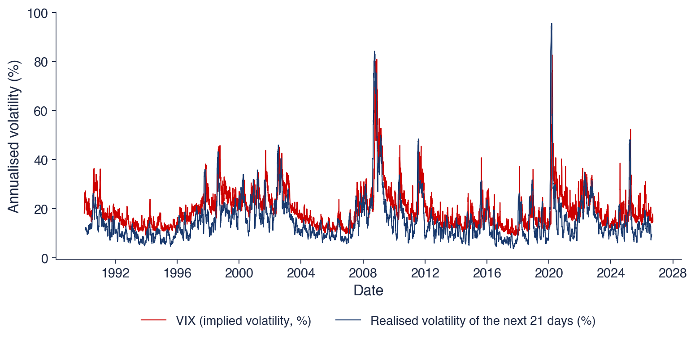
VIX and the realised volatility of the S&P 500 over the next 21 trading days, \(\sqrt{(A/21)\sum_{j=1}^{21} r_{t+j}^2}\); maximum VIX: 82.7 on 16 March 2020
Question for the room: is the red line usually above or below the blue one?
The red line is usually above. The VIX exceeded the realised volatility of the following 21 trading days on 86% of the 9,199 days, and the mean VIX, 19.4%, is 4.1 points above the mean realised volatility, 15.3%. This gap is the variance risk premium: investors pay to be insured against volatility spikes, so options are priced at a volatility above the one that is expected to materialise, as Carr & Wu (2009) and Bollerslev, Tauchen & Zhou (2009) document.
As a forecast, the VIX is informative but biased. A regression of the future realised volatility on the VIX gives realised \(= -1.72 + 0.88\,\)VIX, with \(R^2 = 0.52\). An unbiased forecast would have intercept 0 and slope 1; with these estimates, a VIX of 20 forecasts a realised volatility of about 15.9%. The realised volatility of the past 21 days explains less of the future, \(R^2 = 0.44\), so the market price contains information that past returns do not.
The daily log changes of the VIX and the daily returns of the S&P 500 have a correlation of −0.71: fear rises when prices fall. This strong negative relation between returns and changes in expected volatility leads directly to the next topic, the leverage effect.
In brief
Answer: above; VIX exceeded the next 21 days' realised volatility on 86% of the 9 199 days
mean VIX 19.4% against mean realised 15.3%: a gap of 4.1 points
The leverage effect is the observation that negative returns are followed by higher volatility than positive returns of the same size (Christie, 1982). Two explanations have been proposed. The leverage story says that a falling share price raises the ratio of debt to equity, so the equity of the firm becomes riskier. The volatility-feedback story reverses the causality: when expected volatility rises, investors require a higher return, so the price must fall today, as French, Schwert & Stambaugh (1987) and Bekaert & Wu (2000) argue.
A simple measure of the effect is the correlation \(\mathrm{corr}(r_t, |r_{t+j}|)\) for \(j = 1, 2, \dots\), where \(j\) is the number of days ahead and the correlation is computed over all days \(t\). A negative value means that today's fall announces turbulence in the following days. Under a symmetric model, in which positive and negative returns of the same size have the same effect on future volatility, this correlation is zero.
Chapter 2 met an asymmetry in the distribution of returns, through their skewness. Here the asymmetry is in the dynamics of volatility: the same absolute move has different consequences depending on its sign. The next two frames measure this asymmetry in the data, first with correlations and conditional means, then with a nonparametric regression.
In brief
Leverage effect: negative returns are followed by higher volatility than positive returns of the same size Christie (1982)
leverage story: a falling share price raises the debt-to-equity ratio, so the equity becomes riskier
The chart shows \(\mathrm{corr}(r_t, |r_{t+j}|)\) for \(j = 1, \dots, 10\) days ahead in four markets. For the S&P 500, the DAX and the BET all ten correlations are negative; for the S&P 500 the correlation is −0.122 at \(j = 1\) and decays only slowly with the horizon. For Bitcoin the correlations are small and of mixed sign, positive at lags 8 and 9.
The reverse direction gives a useful comparison. The correlation between yesterday's absolute return and today's return, \(\mathrm{corr}(|r_{t-1}|, r_t)\), is only 0.025 for the S&P 500. The size of yesterday's move says almost nothing about the sign of today's return, while the sign of today's return says something about the size of the moves to come: the asymmetry runs from returns to future volatility.
A second measure divides the mean of \(r_{t+1}^2\) after a down day by its mean after an up day. The ratio is 1.51 for the S&P 500, 1.46 for the DAX, 1.41 for the BET and 1.06 for Bitcoin: for the three stock indices the next day's variance is 40% to 50% higher after a fall than after a rise, while for Bitcoin the effect is almost absent. This difference is consistent with the leverage story, which concerns firms financed partly with debt; Bitcoin has no balance sheet.
In brief
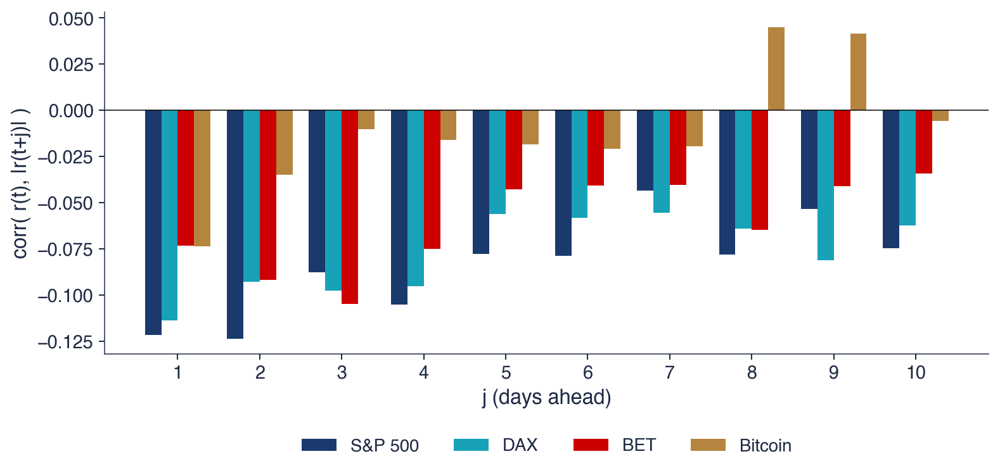
\(\mathrm{corr}(r_t, |r_{t+j}|)\), \(j = 1, \dots, 10\); S&P 500: \(-0.122\) at \(j = 1\); the reverse direction \(\mathrm{corr}(|r_{t-1}|, r_t) = 0.025\)
Mean \(r_{t+1}^2\) after a down day divided by that after an up day: S&P 500 1.51, DAX 1.46, BET 1.41, Bitcoin 1.06
The leverage effect can also be measured without assuming a functional form. Let \(\hat m_1(x)\) and \(\hat m_2(x)\) be local linear regressions of \(r_t\) and of \(r_t^2\) on yesterday's return \(r_{t-1} = x\), with a quartic kernel and a bandwidth of 0.04 on decimal returns. The conditional volatility given yesterday's return is then
the square root of the conditional second moment minus the squared conditional mean.
The chart shows \(\hat\sigma(x)\) for the S&P 500 and the DAX, for \(x\) between about −5% and 5%. Both curves are U-shaped: large moves of either sign are followed by higher volatility. But they are not symmetric. For the S&P 500, \(\hat\sigma(-2\%) = 1.61\%\) against \(\hat\sigma(+2\%) = 1.16\%\), and the minimum is at \(x \approx 0.7\%\), not at 0: a moderate rise is followed by the calmest day.
The curve is an estimate of the news impact curve, the relation between today's news and tomorrow's volatility. A symmetric GARCH model implies a parabola centred at zero, since its variance depends on \(r_{t-1}^2\) only. The data shift the minimum to the right and make the left branch steeper, which is the shape that the asymmetric GARCH models of Chapter 9 are built to reproduce.
In brief
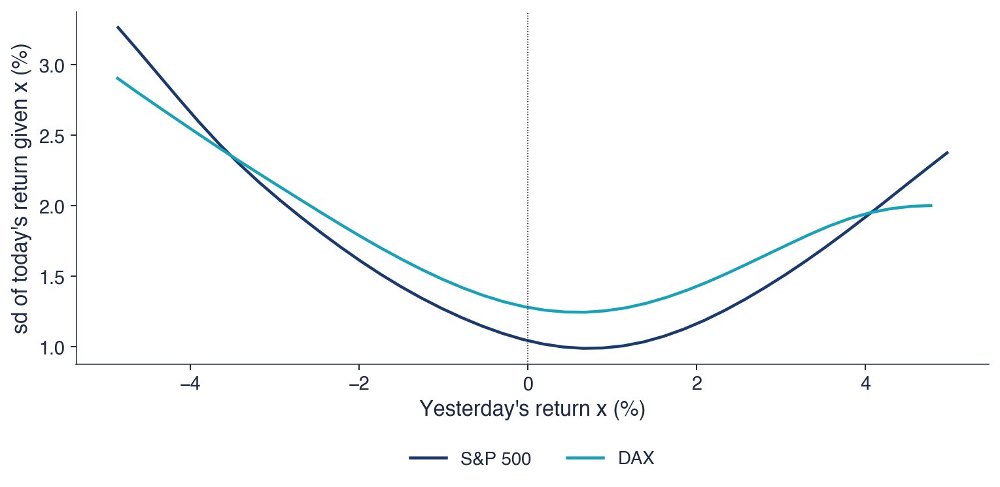
\(\hat\sigma(x) = \sqrt{\hat m_2(x) - \hat m_1(x)^2}\), \(\hat m_1\), \(\hat m_2\): local linear regressions of \(r_t\) and \(r_t^2\) on \(r_{t-1} = x\) (quartic kernel, bandwidth \(0.04\) on decimal returns, as in SFEvolnonparest)
S&P 500: \(\hat\sigma(-2\%) = 1.61\%\) against \(\hat\sigma(+2\%) = 1.16\%\); the minimum is at \(x \approx 0.7\%\), not at 0: an asymmetric news impact
Annual volatility varies widely, from 7% to 41% for the S&P 500 since 1990, but it reverts to a normal level: the AR(1) coefficient of log monthly volatility is 0.67, a half-life of 1.7 months. The VIX exceeded the realised volatility of the next month on 86% of days, by 4.1 points on average, a variance risk premium, and it forecasts realised volatility better than past volatility does. Falls raise future volatility more than rises: after a down day the next day's variance is about 1.5 times higher for the S&P 500, and the nonparametric news impact curve is asymmetric. The next section asks how to decide which volatility forecast is best.
Evaluating Volatility Forecasts
A volatility forecast cannot be compared with the true volatility, because the true volatility is never observed. The section explains how forecasts are evaluated against a noisy proxy, which loss functions give the right ranking despite the noise, how six forecasts of the S&P 500 compare from 2010 on, how they behaved in 2020, and how the EWMA decay factor can be chosen by a forecast criterion.
A forecast \(h_t\) of the variance \(\sigma_t^2\) is made at the close of day \(t-1\), and the true \(\sigma_t^2\) is never observed. The forecast is therefore compared with a proxy \(\hat\sigma_t^2\): a measurable quantity that is conditionally unbiased, \(E[\hat\sigma_t^2 \mid \mathcal{F}_{t-1}] = \sigma_t^2\). The proxy is correct on average but contains noise, and the noise affects every measure of forecast quality.
The proxies of this chapter range from noisy to precise: the squared return \(r_t^2\), a range-based estimator, and realised variance. With \(r_t^2\) even a perfect forecast looks poor, because \(r_t^2 = \sigma_t^2 z_t^2\) and the factor \(z_t^2\) dominates the day-to-day variation. Andersen & Bollerslev (1998) showed that the low \(R^2\) values that GARCH forecasts achieve against squared returns do not mean bad models: with realised variance as the proxy, the same forecasts explain a large part of the variation.
with intercept \(a\), slope \(b\) and error \(u_t\). A good forecast has \(a \approx 0\) and \(b \approx 1\): it is unbiased and moves one for one with the proxy. The \(R^2\) measures how much of the variation of the proxy the forecast explains. Since the proxy noise limits the attainable \(R^2\), the regression compares forecasts with each other on the same proxy; it does not measure their quality in absolute terms.
In brief
A forecast \(h_t\) of \(\sigma_t^2\) is made at the close of day \(t-1\); the true \(\sigma_t^2\) is never observed
we compare \(h_t\) with a proxy\(\hat\sigma_t^2\): a measurable quantity with \(E[\hat\sigma_t^2 \mid \mathcal{F}_{t-1}] = \sigma_t^2\)
Proxies, from noisy to precise: \(r_t^2\), a range estimator, realised variance
with \(r_t^2\) even a perfect forecast looks poor: Andersen & Bollerslev (1998) showed that a low \(R^2\) does not mean a bad model
Forecasts are ranked by their average loss over the evaluation days; the lower, the better (Patton, 2011). With \(h_t\) the variance forecast and \(\hat\sigma_t^2\) the proxy, the loss of one day is \(L = (\hat\sigma_t^2 - h_t)^2\) for the mean squared error (MSE), and
\[L = \frac{\hat\sigma_t^2}{h_t} + \ln h_t\]
(8.14)
for QLIKE (quasi-likelihood). QLIKE is, up to constants, minus the Normal log-likelihood of a return with variance \(h_t\): the density of \(N(0, h_t)\) at \(r_t\) has logarithm \(-\tfrac12\ln(2\pi) - \tfrac12\ln h_t - r_t^2/(2h_t)\).
Both losses are robust: with a noisy but unbiased proxy they rank forecasts in the same way as the true variance would. For QLIKE this follows from \(E[\hat\sigma_t^2/h_t + \ln h_t \mid \mathcal{F}_{t-1}] = \sigma_t^2/h_t + \ln h_t\), which is minimised at \(h_t = \sigma_t^2\); the noise of the proxy adds variance to the average loss, but does not move its minimum. Losses computed on \(\sqrt{h_t}\) or on \(\ln h_t\), such as the squared error of the volatility, are not robust: the noise of the proxy shifts their minimum away from the true variance, and they can prefer the wrong forecast.
The worked example shows how the two losses weigh errors. Let the true variance and the proxy both equal 1, and compare the forecasts \(h = 0.5\) and \(h = 2\), each wrong by a factor of 2. The MSE is \((1 - 0.5)^2 = 0.25\) against \((1 - 2)^2 = 1\): it punishes over-prediction more. QLIKE is \(1/0.5 + \ln 0.5 = 2 - 0.693 = 1.307\) against \(1/2 + \ln 2 = 0.5 + 0.693 = 1.193\), compared with the minimum 1 at \(h = 1\): it punishes under-prediction more, which is the costly error in risk management, because an understated variance understates VaR. QLIKE also depends on the forecast error only through the ratio \(\hat\sigma_t^2/h_t\), so calm and turbulent days weigh comparably, while the MSE is dominated by the few days with the largest variances.
In brief
Average loss over the evaluation days; lower is better Patton (2011)
\(L\): the loss of one day; \(h_t\): the variance forecast; \(\hat\sigma_t^2\): the proxy
MSE: \(L = (\hat\sigma_t^2 - h_t)^2\)
QLIKE (quasi-likelihood): \(L = \hat\sigma_t^2/h_t + \ln h_t\), minus the Normal log-likelihood up to constants
Both are robust: with a noisy but unbiased proxy they rank forecasts as the true variance would
losses on \(\sqrt{h_t}\) or on \(\ln h_t\) are not robust and can prefer the wrong forecast
Worked example: true variance and proxy equal to 1; two forecasts, \(h = 0.5\) and \(h = 2\)
MSE: \((1 - 0.5)^2 = 0.25\) against \((1 - 2)^2 = 1\): MSE punishes over-prediction more
QLIKE: \(1/0.5 + (-0.693) = 1.307\) against \(1/2 + 0.693 = 1.193\): QLIKE punishes under-prediction more, the costly error for risk management
The table compares six next-day variance forecasts of the S&P 500 over 4,202 days from 2010: rolling windows of 21, 63 and 252 days, EWMA with \(\lambda = 0.94\) and \(\lambda = 0.97\), and the VIX. The VIX forecast is \(\mathrm{VIX}^2/A\), which converts the annualised implied volatility into a daily variance. The proxy is \(r_t^2\); the range proxy used in the last row is \(o_t^2\) plus the Garman–Klass term, which adds the night to an efficient session estimate.
By MSE, the VIX is best (16.70), followed by EWMA 0.94 (17.77), the 21-day window (18.99), EWMA 0.97 (19.02), the 63-day window (20.77) and the 252-day window (21.43). By QLIKE the order is the VIX (0.799), EWMA 0.94 (0.808), EWMA 0.97 (0.844), the 21-day window (0.876), the 63-day window (0.914) and the 252-day window (1.099). The two losses agree on the first two places and on the last ones, and they swap the 21-day window and EWMA 0.97.
Whether a difference in average loss is significant is decided by the Diebold–Mariano (DM) test (Diebold & Mariano, 1995), a \(t\)-test on the mean of the daily loss differences with a standard error that allows for their autocorrelation. For QLIKE, EWMA 0.94 against the 21-day window gives \(t = -4.50\) (p < 0.001), while the VIX against EWMA 0.94 gives \(t = -0.32\) (p = 0.751). EWMA thus beats the 21-day window, the VIX and EWMA are not significantly different, and the long window is worst. The Mincer–Zarnowitz \(R^2\) with the proxy \(r^2\) ranges from 0.25 for the VIX to 0.01 for the 252-day window; the range proxy raises every value, to 0.42 for the VIX and 0.29 for EWMA 0.94, but leaves the ranking unchanged.
In brief
21 days
63 days
252 days
EWMA 0.94
EWMA 0.97
VIX
MSE
18.99
20.77
21.43
17.77
19.02
16.70
QLIKE
0.876
0.914
1.099
0.808
0.844
0.799
MZ \(R^2\), proxy \(r^2\)
0.14
0.05
0.01
0.17
0.11
0.25
MZ \(R^2\), range proxy
0.24
0.09
0.02
0.29
0.19
0.42
Next-day variance forecasts for 4 202 days from 2010; proxy \(r_t^2\); VIX forecast: VIX\(^2/A\); range proxy: \(o_t^2\) plus the Garman–Klass term
DM (Diebold–Mariano) test of equal QLIKE Diebold & Mariano (1995): EWMA 0.94 against 21 days \(t = -4.50\) (p \(<\) 0.001); VIX against EWMA 0.94 \(t = -0.32\) (p = 0.751)
EWMA beats the 21-day window; VIX and EWMA are not significantly different; the long window is worst; a precise proxy raises every \(R^2\), but not the ranking
The chart follows three next-day volatility forecasts of the S&P 500 through 2020, annualised: the 252-day window in green, EWMA with \(\lambda = 0.94\) in red, and the VIX in dark blue; the bars are the absolute daily returns \(|r_t|\) on the same annual scale. All three start the year below 15%.
The forecasts reacted to the crash at different speeds. The VIX started to rise one trading day before the first large fall of February 2020, since option prices respond to news as it arrives. EWMA rose right after the fall, as soon as a large squared return entered the recursion, and peaked in March. The 252-day window moved slowly, reached its peak only in the summer and stayed near this peak for the rest of the year, long after the daily moves had become small.
After the peak, EWMA stayed above the VIX through April and May, because it decays mechanically by 6% a day, while the VIX fell as soon as the market calmed. From the summer on EWMA was below the VIX, which kept a premium, and below the 252-day window, which still contained the March crash. The three forecasts differ most precisely in the periods when forecasts matter most.
In brief
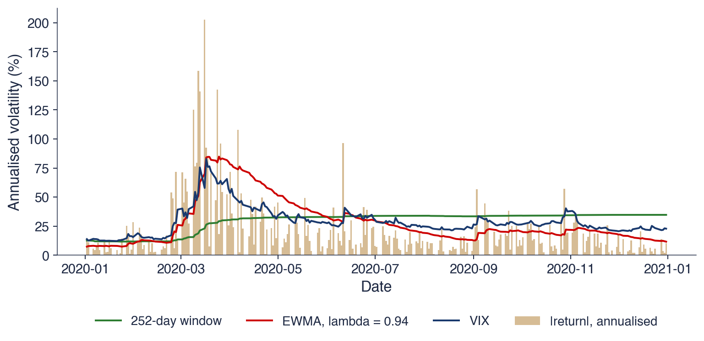
Next-day volatility forecasts of the S&P 500 in 2020 (annualised): 252-day window, EWMA (\(\lambda = 0.94\)) and VIX; bars: \(|r_t|\)
VIX started to rise one trading day before the first large fall of February 2020; EWMA rose right after it; the 252-day window moved slowly and stayed near its peak for the rest of the year
The chart plots the mean QLIKE of next-day EWMA forecasts, with the proxy \(r_t^2\), as a function of the decay factor \(\lambda\) from 0.80 to 0.995, minus its minimum, so that each curve touches zero at its best value. The evaluation starts in 2010 for the S&P 500 and the BET and in 2016 for Bitcoin. The dashed vertical line marks the RiskMetrics value 0.94.
The best decay factor is 0.925 for the S&P 500, 0.885 for the BET and 0.970 for Bitcoin. The curves are flat near their minima and rise steeply as \(\lambda\) approaches 1, so a memory that is too long costs much more than one that is slightly too short. For the S&P 500 the RiskMetrics value 0.94 increases the mean QLIKE by only 0.002 over the best value.
One \(\lambda\) for all assets is therefore a convenient compromise, not an optimum. The BET prefers a shorter memory than RiskMetrics, and Bitcoin a longer one. Choosing a parameter by its forecast loss is the same principle as choosing a model by its out-of-sample performance; Chapter 9 estimates the GARCH parameters by maximum likelihood instead, which, for Normal shocks, amounts to minimising QLIKE in sample.
In brief
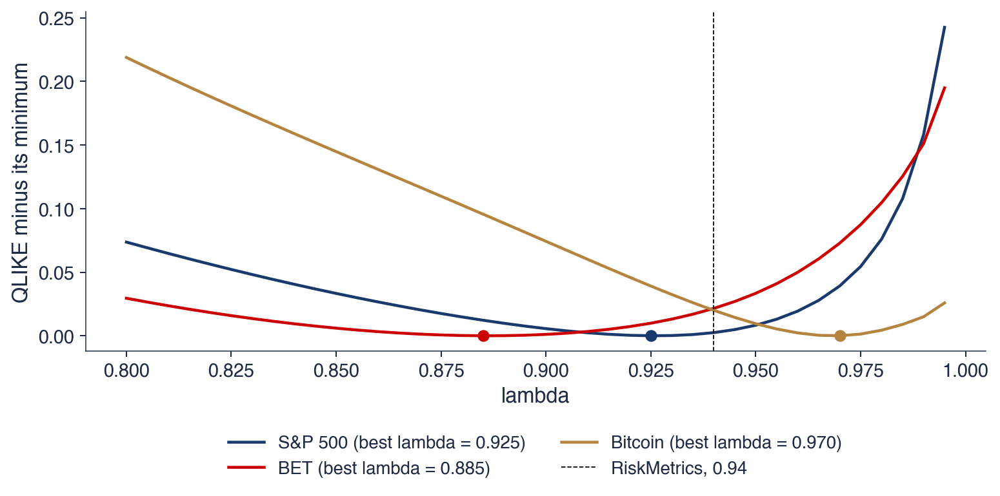
Mean QLIKE of next-day EWMA forecasts (proxy \(r_t^2\), from 2010; Bitcoin from 2016) minus its minimum, for \(\lambda\) from 0.80 to 0.995
Best \(\lambda\): S&P 500 0.925, BET 0.885, Bitcoin 0.970; the RiskMetrics 0.94 loses only 0.002 for the S&P 500
One \(\lambda\) for all assets is a convenient compromise, not an optimum
Volatility forecasts are compared with a proxy, and only robust losses such as MSE and QLIKE rank them correctly despite the noise of the proxy. On the S&P 500 from 2010, the VIX and EWMA 0.94 have the lowest losses and do not differ significantly, EWMA beats the 21-day window, and the 252-day window is worst; a more precise proxy raises every Mincer–Zarnowitz \(R^2\) but leaves the ranking unchanged. The best EWMA decay factor differs by market, from 0.885 for the BET to 0.970 for Bitcoin, while the RiskMetrics 0.94 costs little for the S&P 500.
AI for Scientific Discovery
The section starts from an open question raised by the results of the chapter: whether range-based estimators help on the Bucharest Stock Exchange, where many stocks trade thinly. It shows where AI tools can help a researcher who studies it and which checks they cannot replace.
Do range-based estimators help on the Bucharest Stock Exchange, where many stocks trade thinly? The theory of Section 4 points both ways. Ranges are 5 to 9 times more efficient than closes under continuous trading, but thin trading shrinks the observed range, so the estimators become biased downwards.
The data of four large Bucharest stocks show both forces. Since 2010, the share of days with trades but an unchanged close is 9% for TLV, 8% for SNP, 10% for BRD and 10% for TGN, a direct sign of thin trading. The ratio of the Parkinson to the close-to-close volatility is 0.81 for TLV, 0.87 for SNP, 0.90 for BRD and 0.87 for TGN, against 0.78 for the S&P 500, so the ratio alone does not measure illiquidity: on the S&P 500 it reflects the night and the covariance term. In next-day forecasts with a 21-day window, the mean QLIKE of close-to-close against Yang–Zhang is 2.022 against 2.039 for TLV, a small advantage for close-to-close, and 1.750 against 1.636 for TGN, a clear advantage for Yang–Zhang.
The answer differs by stock, and the question of why remains open. The candidates are liquidity, the opening auction, which determines how the open is formed, and the size of the overnight move. AI tools can speed up a study of this question, but its results must still be checked (Wang et al., 2023).
In brief
Do range-based estimators help on the Bucharest Stock Exchange, where many stocks trade thinly?
theory: ranges are 5 to 9 times more efficient; but thin trading shrinks the observed range (Section 4)
days with trades but an unchanged close, since 2010: TLV 9%, SNP 8%, BRD 10%, TGN 10%
An AI assistant can help in three stages. For the literature, it can list studies of range-based and realised volatility in emerging and thinly traded markets, with the data and estimators each one uses, which gives a starting point for comparing the Bucharest exchange with similar markets. For the code, it can write a first draft of the five estimators, of rolling forecasts and of QLIKE comparisons for all stocks in the BET. For robustness, it can propose and implement variants: liquidity groups formed by trading volume, other window lengths, and the two halves 2016–2020 and 2021–2026.
The example prompt on the slide is precise: it names the four range-based estimators, the 21-day window, the inputs, the forecast horizon, the loss function and the proxy. A precise prompt produces code that can be checked against the definitions of this chapter; a vague one produces code whose choices remain hidden.
The result of each stage is a draft. The list of papers has to be checked reference by reference, and the code has to be tested on known results, for example by reproducing the table of five estimators for the S&P 500 and the two Bucharest stocks before applying it to the whole index.
In brief
Literature: list studies of range-based and realised volatility in emerging and thin markets, with their data and estimators
Code: a first draft of the five estimators, rolling forecasts and QLIKE comparisons for all BET stocks
Robustness: liquidity groups by volume, other windows, the 2016–2020 and 2021–2026 halves
Example prompt
Write a Python function that computes the Parkinson, Garman-Klass, Rogers-Satchell and Yang-Zhang variance on rolling 21-day windows from daily open, high, low and close prices, and compares their next-day forecasts with QLIKE against squared close-to-close returns.
Several errors are common in AI-generated code for range-based estimators. The constants are the first: \(4\ln 2\) in Parkinson, (8.6),\(2\ln 2 - 1\) in Garman–Klass, (8.7), and the weight \(k\) of Yang–Zhang, (8.9), which depends on the window length. A draft that divides by \(\ln 2\) instead of \(4\ln 2\), or that sets \(k = 0.34\), is wrong, and the error changes the level of every estimate.
The data need equal care. For stocks, the open, high and low must be adjusted for dividends and splits with the same factor as the close; otherwise every ex-dividend day creates an artificial overnight jump. Annualisation must use the actual trading frequency: 365 days for crypto-assets and about 250 for Bucharest stocks.
Forecasts must have no look-ahead: the forecast for day \(t\) may use only data up to day \(t-1\), and an off-by-one error in a rolling window makes a forecast look much better than it is. Finally, every paper cited by an AI tool must exist; checking the DOI of each reference is the simplest test, because invented references with plausible titles are a known error of language models.
In brief
The constants: \(4\ln 2\) in Parkinson, \(2\ln 2 - 1\) in Garman–Klass, \(k\) in Yang–Zhang; a draft with \(\ln 2\) or \(k = 0.34\) is wrong
Stock prices: open, high and low must be adjusted for dividends and splits with the same factor as the close
Annualisation with the actual frequency: 365 for crypto, about 250 for BVB stocks
No look-ahead: the forecast for day \(t\) uses only data up to day \(t-1\)
References: every cited paper must exist; check the DOI
The project asks which daily volatility estimator a Romanian risk manager should use. The data are Bucharest stocks since 2010, TLV, SNP, BRD, TGN and others with OHLC data, with the S&P 500 and the DAX as benchmarks, all from the EODHD data provider.
The steps follow the chapter. Compute the five estimators on 21-day windows and their EWMA versions, and produce next-day forecasts. Evaluate the forecasts with QLIKE and MSE against the proxy \(r_t^2\), test the differences with Diebold–Mariano tests, and report the results by liquidity group. Finally, relate the gain of Yang–Zhang over close-to-close to the share of zero-volume days and to the overnight share of the variance.
The deliverables are one table, one chart and a paragraph on what the data can and cannot show. Any use of AI is declared, together with the errors of the AI that were found and corrected.
In brief
Question: which daily volatility estimator should a Romanian risk manager use?
data: BVB stocks since 2010 (TLV, SNP, BRD, TGN, and others with OHLC data), S&P 500 and DAX as benchmarks (EODHD)
Steps
the five estimators on 21-day windows; EWMA versions of each; next-day forecasts
QLIKE and MSE with the proxy \(r_t^2\); Diebold–Mariano tests; results by liquidity group
relate the gain of YZ over CC to the share of zero-volume days and to the overnight share
Deliverables: one table, one chart, and a paragraph on what the data can and cannot show
Declare any AI use, and list the errors of the AI that you corrected
Section summary
On the Bucharest Stock Exchange the gain from range-based estimators depends on the stock: Yang–Zhang improves next-day forecasts for TGN but not for TLV, and between 8% and 10% of trading days have an unchanged close. Answering the question requires liquidity measures, a careful treatment of the open and of the night, and forecasts without look-ahead; AI tools can draft the code and the literature search, while the researcher checks the constants, the adjustments and the references.
Summary
The results of the chapter come down to a few statements about how volatility is measured and how it behaves, a set of formulas, and three questions for self-assessment.
Volatility is the standard deviation of returns. It is latent, it changes over time, and it is annualised with the square root of the actual number of observations per year. A rolling window trades speed against noise and produces ghost effects when old shocks leave it; EWMA with \(\lambda = 0.94\) reacts fast and forgets smoothly.
Range-based estimators use the path of the day and are far more efficient than the close-to-close estimator, but overnight jumps and thin trading bias them downwards; Yang–Zhang adds the night. Realised variance from five-minute returns makes volatility almost observable. Volatility clusters: absolute and squared returns are autocorrelated for months, which the Ljung–Box test on squared returns and the ARCH-LM test detect.
Over the long run volatility reverts to a normal level; the VIX usually exceeds the realised volatility that follows; and falls raise future volatility more than rises. Forecasts are compared with a proxy and robust losses such as QLIKE, and the differences between them are tested before a winner is declared.
In brief
Volatility is the standard deviation of returns; it is latent and changes over time; annualise with the actual frequency
Historical windows trade speed against noise; EWMA (\(\lambda = 0.94\)) reacts fast and avoids ghosts
Range estimators use the daily path: far more efficient, but biased by overnight jumps and thin trading; Yang–Zhang adds the night
Clustering: \(|r_t|\) and \(r_t^2\) are autocorrelated; detect it with Ljung–Box on \(r_t^2\) and ARCH-LM
The table collects the formulas of the chapter. Annualisation, (8.1), multiplies the daily volatility by the square root of the number of observations per year. The EWMA recursion, (8.3), updates the variance every day with weight \(1 - \lambda\) on the newest squared return, and its half-life is \(\ln 0.5/\ln\lambda\).
The four range-based estimators use the moves from the open to the high, the low and the close: Parkinson, (8.6), uses the range only; Garman–Klass, (8.7), adds the open-to-close move; Rogers–Satchell, (8.8), is unbiased with drift; and Yang–Zhang, (8.9), adds the overnight variance. Realised variance, (8.10), sums squared intraday returns.
The McLeod–Li statistic, (8.11), and the ARCH-LM statistic, (8.12), test for clustering, both with \(\chi^2\) distributions under the null hypothesis. The MSE and QLIKE losses, (8.14), evaluate variance forecasts against a proxy; both are robust to the noise of the proxy.
The first question gives a stock with a high of 102 and a low of 98 on one day and asks for its Parkinson daily volatility. The log range is \(\ln(102/98) = 4.00\%\), and by (8.6) the variance is \(4.00^2/2.77\), so the daily volatility is \(\sqrt{4.00^2/2.77} = 2.40\%\).
The second question supposes that the Ljung–Box test on returns does not reject, while the same test on squared returns rejects strongly. The conclusion is that the mean is unpredictable while the variance is predictable: volatility clustering without autocorrelation of the returns, the pattern of every series in this chapter.
The third question asks why EWMA with \(\lambda = 0.94\) cannot forecast a return of volatility to its normal level. As a GARCH model it has \(\omega = 0\) and \(\alpha + \beta = 1\), so its forecasts are flat at every horizon. The next chapter, Chapter 9, introduces the ARCH and GARCH models, whose forecasts revert to a long-run level.
In brief
Question: a stock has \(H = 102\), \(L = 98\) on one day; what is the Parkinson daily volatility?